Q01 · 8.4 / Effects of Local Conditions on Enzyme Activity 正式分類
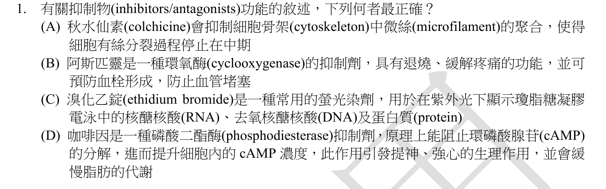
本地原卷PDF2 · 同年官方原卷PDF2 · 官方原答案PDF1（生物50題） · 已核對同年生物釋疑PDF6–8（未列本題）
官方採計：B 原答案：B
未列本輪取得的115年度生物釋疑PDF6–8；依同年答案，不宣稱沒有其他未取得公告
主分類：Ch08 An Introduction to Metabolism
8.4 / Effects of Local Conditions on Enzyme Activity
目錄行529；條目起始印刷頁157；實際目錄 PDF37
次分類：Ch45 Hormones and the Endocrine System
45.1 / Intercellular Information Flow
目錄行2998；條目起始印刷頁1000；實際目錄 PDF47
主分類理由：8.4 / Effects of Local Conditions on Enzyme Activity：判別藥物抑制酵素與其生理後果，環氧酶抑制是正確選項的機制。
次分類理由：45.1 / Intercellular Information Flow：前列腺素的局部調節連結止痛與發炎作用。
科學說明：官方B。阿斯匹靈抑制COX及前列腺素生成；FDA藥理段補充血小板COX／血栓素A2機制。A把微管誤寫微絲；C將核酸螢光染色概括到蛋白質；D即使按抑制PDE使cAMP升高的模型，也不能推出脂肪代謝減慢。本題藥理敘述不等於個人用藥建議。
來源涵蓋範圍：教材支援分類原理，未直接涵蓋的專名與細節由同年釋疑／具名補充來源補足；實讀範圍與下載限制見來源紀錄。
教材正文：印刷157／PDF206、印刷158／PDF207、印刷159／PDF208、印刷1000／PDF1049、印刷1001／PDF1050
補充來源：S01
另行比較：是否應以發炎免疫或有絲分裂作主分類？
B核心是COX抑制及其產物效應，故主8.4、次45.1；A的微絲錯置只作干擾項檢查。FDA12.1確認血小板效應，保留課本涵蓋界線。
結論：證據確認，分類疑義已解決。完整覆核紀錄
Q02 · 20.1 / Expressing Cloned Eukaryotic Genes 正式分類
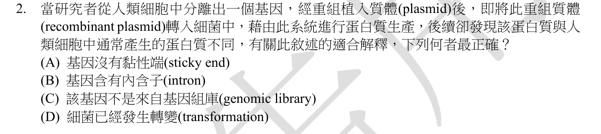
本地原卷PDF2 · 同年官方原卷PDF2 · 官方原答案PDF1（生物50題） · 已核對同年生物釋疑PDF6–8（未列本題）
官方採計：B 原答案：B
未列本輪取得的115年度生物釋疑PDF6–8；依同年答案，不宣稱沒有其他未取得公告
主分類：Ch20 DNA Tools and Biotechnology
20.1 / Expressing Cloned Eukaryotic Genes
目錄行1244；條目起始印刷頁422；實際目錄 PDF40
次分類：Ch17 Gene Expression: From Gene to Protein
17.3 / Split Genes and RNA Splicing
目錄行1062；條目起始印刷頁345；實際目錄 PDF39
主分類理由：20.1 / Expressing Cloned Eukaryotic Genes：重組人類基因在細菌表現的障礙，直接對應真核克隆基因表現條目。
次分類理由：17.3 / Split Genes and RNA Splicing：內含子去除及成熟mRNA提供cDNA的原理。
科學說明：官方B。人類基因組序列可能含內含子，細菌缺乏相應真核剪接機制；以成熟mRNA製作cDNA可避開此障礙。黏性端關乎組裝，轉形只是送入DNA；蛋白修飾與啟動子也可能影響產物，但在本組選項中B最直接。
來源涵蓋範圍：以本地Campbell實際目錄及列示正文作分類依據，原題限定與同年釋疑另存；不將正文小標冒充目錄條目。
教材正文：印刷345／PDF394、印刷346／PDF395、印刷422／PDF471、印刷423／PDF472
補充來源：本題未另列課本外來源
另行比較：RNA剪接與生物技術哪個為主？
題幹是跨物種重組蛋白生產的障礙，20.1直接對應；17.3列次提供內含子機制。A/C/D不能比B更直接解釋產物差異。
結論：證據確認，分類疑義已解決。完整覆核紀錄
Q03 · 41.1 / Essential Nutrients 正式分類
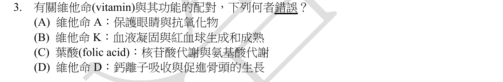
本地原卷PDF2 · 同年官方原卷PDF2 · 官方原答案PDF1（生物50題） · 已核對同年生物釋疑PDF6–8（未列本題）
官方採計：B 原答案：B
未列本輪取得的115年度生物釋疑PDF6–8；依同年答案，不宣稱沒有其他未取得公告
主分類：Ch41 Animal Nutrition
41.1 / Essential Nutrients
目錄行2685；條目起始印刷頁899；實際目錄 PDF46
主分類理由：41.1 / Essential Nutrients：維生素的必需營養與功能配對，可由Table41.1直接核對。
次分類理由：無另列最小次條目；實看Table41.1，K與凝血相連，B12／葉酸與紅血球相關；主41.1保留必需營養的真實目錄層級。A廣義抗氧化不等於表格已逐一證實所有A形式，差異另存而不替換官方B。
科學說明：官方B。維生素K主要支援凝血蛋白合成；B12與葉酸才涉及紅血球生成及核苷酸代謝。教材表列A參與視覺及上皮維持，未將所有維生素A形式統稱抗氧化物；原題A的廣義抗氧化表述與表格差異保留。D的鈣吸收、骨生長配對成立。
來源涵蓋範圍：以本地Campbell實際目錄及列示正文作分類依據，原題限定與同年釋疑另存；不將正文小標冒充目錄條目。
教材正文：印刷899／PDF948、印刷900／PDF949、印刷901／PDF950
補充來源：本題未另列課本外來源
另行比較：是否要分到血液細胞或把A判成第二個錯項？
實看Table41.1，K與凝血相連，B12／葉酸與紅血球相關；主41.1保留必需營養的真實目錄層級。A廣義抗氧化不等於表格已逐一證實所有A形式，差異另存而不替換官方B。
結論：證據確認，分類疑義已解決。完整覆核紀錄
Q04 · 16.2 / DNA Replication: A Closer Look 正式分類
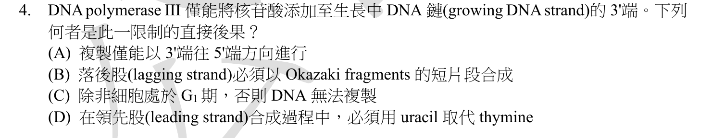
本地原卷PDF2 · 同年官方原卷PDF2 · 官方原答案PDF1（生物50題） · 已核對同年生物釋疑PDF6–8（未列本題）
官方採計：B 原答案：B
未列本輪取得的115年度生物釋疑PDF6–8；依同年答案，不宣稱沒有其他未取得公告
主分類：Ch16 The Molecular Basis of Inheritance
16.2 / DNA Replication: A Closer Look
目錄行1010；條目起始印刷頁322；實際目錄 PDF39
主分類理由：16.2 / DNA Replication: A Closer Look：兩股反向平行和聚合酶延伸方向共同導出落後股不連續合成。
次分類理由：無另列最小次條目；3′端延伸與反平行直接導出落後股，16.2最貼切。A顛倒延伸方向；G1與U干擾項不另列主次章。
科學說明：官方B。兩股新DNA皆按5′→3′合成，落後股需岡崎片段；不是新股按3′→5′合成。真核染色體複製通常在S期；領先股DNA不以U替T，RNA引子含U是另一層次。題目指DNA polymerase III，採細菌複製機制而不誤稱人體酵素。
來源涵蓋範圍：以本地Campbell實際目錄及列示正文作分類依據，原題限定與同年釋疑另存；不將正文小標冒充目錄條目。
教材正文：印刷322／PDF371、印刷323／PDF372、印刷324／PDF373、印刷325／PDF374、印刷326／PDF375
補充來源：本題未另列課本外來源
另行比較：聚合方向還是細胞週期為主？
3′端延伸與反平行直接導出落後股，16.2最貼切。A顛倒延伸方向；G1與U干擾項不另列主次章。
結論：證據確認，分類疑義已解決。完整覆核紀錄
Q05 · 17.5 / Types of Small-Scale Mutations 正式分類
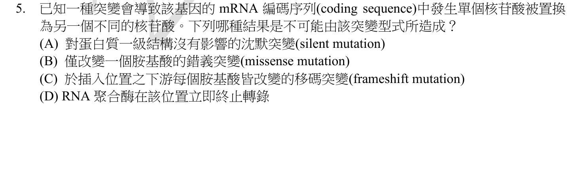
本地原卷PDF2 · 同年官方原卷PDF2 · 官方原答案PDF1（生物50題） · 同年釋疑PDF6
官方採計：C 原答案：C
115年度2026-04-17釋疑維持C
主分類：Ch17 Gene Expression: From Gene to Protein
17.5 / Types of Small-Scale Mutations
目錄行1085；條目起始印刷頁357；實際目錄 PDF39
次分類：Ch17 Gene Expression: From Gene to Protein
17.1 / Basic Principles of Transcription and Translation
目錄行1039；條目起始印刷頁337；實際目錄 PDF39
主分類理由：17.5 / Types of Small-Scale Mutations：單鹼基置換的沉默、錯義、無義與插入／缺失造成移碼的區別。
次分類理由：17.1 / Basic Principles of Transcription and Translation：轉錄與轉譯的不同作用過程用來釐清D及官方釋疑的措辭。
科學說明：官方維持C（釋疑PDF6）。單一置換本身不改變閱讀框；C卻寫「插入位置」，且移碼也不保證每個下游胺基酸都不同。D的RNA聚合酶立即終止轉錄不等同無義突變使核糖體終止轉譯，題意因此不夠嚴整。官方承認此語病，仍採C；官方以GAG→GTG示例使用DNA字母，mRNA應為GAG→GUG，「最可能無義」亦不能當成所有置換的機率結論。分類依突變型式，保留採計與科學差異。
來源涵蓋範圍：以本地Campbell實際目錄及列示正文作分類依據，原題限定與同年釋疑另存；不將正文小標冒充目錄條目。
教材正文：印刷337／PDF386、印刷357／PDF406、印刷358／PDF407、印刷359／PDF408
補充來源：本題未另列課本外來源
另行比較：D亦有科學語病，能否偷偷修正官方答案？
官方PDF6明載維持C並承認轉錄／轉譯用詞問題，已逐段核對。17.5可確定分類，17.1補足兩過程差別；解決分類不抹掉D語病或宣稱官方邏輯毫無問題。
結論：證據確認，分類疑義已解決。完整覆核紀錄
Q06 · 18.2 / Regulation of Chromatin Structure 正式分類
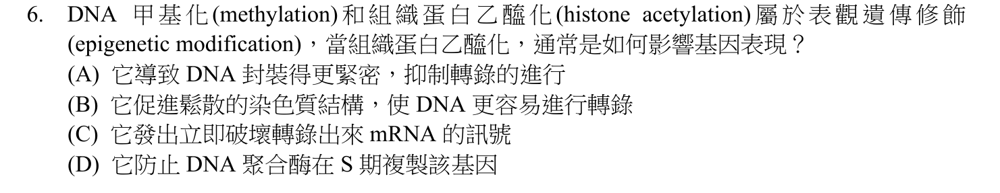
本地原卷PDF3 · 同年官方原卷PDF3 · 官方原答案PDF1（生物50題） · 已核對同年生物釋疑PDF6–8（未列本題）
官方採計：B 原答案：B
未列本輪取得的115年度生物釋疑PDF6–8；依同年答案，不宣稱沒有其他未取得公告
主分類：Ch18 Regulation of Gene Expression
18.2 / Regulation of Chromatin Structure
目錄行1123；條目起始印刷頁371；實際目錄 PDF39
主分類理由：18.2 / Regulation of Chromatin Structure：組蛋白乙醯化改變染色質可接近性屬染色質結構調控。
次分類理由：無另列最小次條目；主要問染色質鬆緊造成可接近性，18.2 Regulation of Chromatin Structure比一般起始調控更準確；B的通常條件保留。
科學說明：官方B。乙醯化通常減弱帶正電組蛋白與DNA的結合，使染色質較開放、利於轉錄；不等同立即降解mRNA或阻止S期複製。「通常」須保留；組蛋白甲基化效果隨位點而異，不能由此泛稱所有甲基化都抑制。
來源涵蓋範圍：以本地Campbell實際目錄及列示正文作分類依據，原題限定與同年釋疑另存；不將正文小標冒充目錄條目。
教材正文：印刷371／PDF420、印刷372／PDF421、印刷373／PDF422
補充來源：本題未另列課本外來源
另行比較：乙醯化是否應歸轉錄起始條目？
主要問染色質鬆緊造成可接近性，18.2 Regulation of Chromatin Structure比一般起始調控更準確；B的通常條件保留。
結論：證據確認，分類疑義已解決。完整覆核紀錄
Q07 · 42.5 / Gills in Aquatic Animals 正式分類
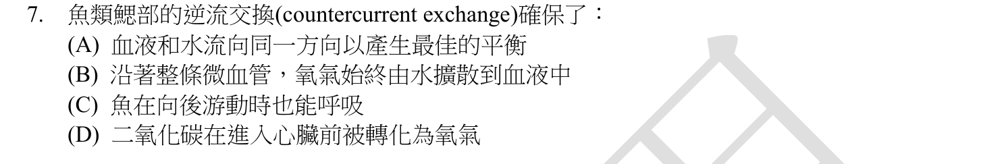
本地原卷PDF3 · 同年官方原卷PDF3 · 官方原答案PDF1（生物50題） · 已核對同年生物釋疑PDF6–8（未列本題）
官方採計：B 原答案：B
未列本輪取得的115年度生物釋疑PDF6–8；依同年答案，不宣稱沒有其他未取得公告
主分類：Ch42 Circulation and Gas Exchange
42.5 / Gills in Aquatic Animals
目錄行2821；條目起始印刷頁940；實際目錄 PDF46
主分類理由：42.5 / Gills in Aquatic Animals：鰓的逆流交換沿交換面維持氧分壓梯度。
次分類理由：無另列最小次條目；本題明問鰓逆流交換氧梯度，42.5 Gills in Aquatic Animals直接涵蓋，毋須另造countercurrent最小目錄條目。
科學說明：官方B。水與血液反向流動，使流經交換面的血液持續接觸較高氧分壓的水，氧因而擴散入血；同向流會逐漸接近平衡。「始終」指題設正常逆流模型，不是任何缺氧環境皆保證氧流入；沒有CO2轉成O2。
來源涵蓋範圍：以本地Campbell實際目錄及列示正文作分類依據，原題限定與同年釋疑另存；不將正文小標冒充目錄條目。
教材正文：印刷940／PDF989、印刷941／PDF990
補充來源：本題未另列課本外來源
另行比較：是否應以魚的演化或循環系統主分類？
本題明問鰓逆流交換氧梯度，42.5 Gills in Aquatic Animals直接涵蓋，毋須另造countercurrent最小目錄條目。
結論：證據確認，分類疑義已解決。完整覆核紀錄
Q08 · 48.3 / Conduction of Action Potentials 正式分類
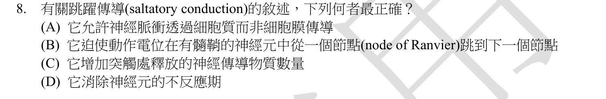
本地原卷PDF3 · 同年官方原卷PDF3 · 官方原答案PDF1（生物50題） · 已核對同年生物釋疑PDF6–8（未列本題）
官方採計：B 原答案：B
未列本輪取得的115年度生物釋疑PDF6–8；依同年答案，不宣稱沒有其他未取得公告
主分類：Ch48 Neurons, Synapses, and Signaling
48.3 / Conduction of Action Potentials
目錄行3212；條目起始印刷頁1075；實際目錄 PDF48
主分類理由：48.3 / Conduction of Action Potentials：有髓鞘軸突的節間電流及郎飛氏結動作電位再生屬動作電位傳導。
次分類理由：無另列最小次條目；局部電流確經軸漿，但動作電位再生仍依膜離子通道；A把兩者相斥不正確。主48.3傳導，B節點再生且保留不反應期。
科學說明：官方B。節間局部電流沿軸漿傳播，動作電位主要在郎飛氏結再生；「跳」是功能描述，並非電流真的跨越空間不連續。A把胞質與膜硬分成替代關係不當，C混入突觸釋放，D不反應期仍存在。
來源涵蓋範圍：以本地Campbell實際目錄及列示正文作分類依據，原題限定與同年釋疑另存；不將正文小標冒充目錄條目。
教材正文：印刷1075／PDF1124、印刷1076／PDF1125、印刷1077／PDF1126
補充來源：本題未另列課本外來源
另行比較：選項A的軸漿傳播是否也合理？
局部電流確經軸漿，但動作電位再生仍依膜離子通道；A把兩者相斥不正確。主48.3傳導，B節點再生且保留不反應期。
結論：證據確認，分類疑義已解決。完整覆核紀錄
Q09 · 49.1 / The Peripheral Nervous System 正式分類
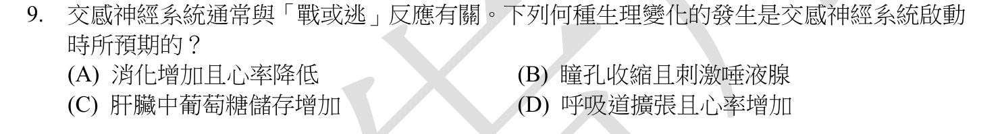
本地原卷PDF3 · 同年官方原卷PDF3 · 官方原答案PDF1（生物50題） · 已核對同年生物釋疑PDF6–8（未列本題）
官方採計：D 原答案：D
未列本輪取得的115年度生物釋疑PDF6–8；依同年答案，不宣稱沒有其他未取得公告
主分類：Ch49 Nervous Systems
49.1 / The Peripheral Nervous System
目錄行3245；條目起始印刷頁1088；實際目錄 PDF48
主分類理由：49.1 / The Peripheral Nervous System：自主神經交感／副交感分支的器官反應列於周邊神經系統。
次分類理由：無另列最小次條目；題目要求辨認交感系統整體效應，49.1周邊神經系統足以涵蓋；D正向，其他器官是例子，不做無必要跨章加權。
科學說明：官方D。交感活化通常使心率上升、支氣管擴張；消化與排空受抑，瞳孔擴大，肝臟促進葡萄糖釋出。C的增加儲糖方向相反；分類不因心臟、氣道同時出現而再分散到循環呼吸章。
來源涵蓋範圍：以本地Campbell實際目錄及列示正文作分類依據，原題限定與同年釋疑另存；不將正文小標冒充目錄條目。
教材正文：印刷1088／PDF1137、印刷1089／PDF1138、印刷1090／PDF1139
補充來源：本題未另列課本外來源
另行比較：呼吸或心臟功能應否各列次章？
題目要求辨認交感系統整體效應，49.1周邊神經系統足以涵蓋；D正向，其他器官是例子，不做無必要跨章加權。
結論：證據確認，分類疑義已解決。完整覆核紀錄
Q10 · 11.3 / Small Molecules and Ions as Second Messengers 正式分類
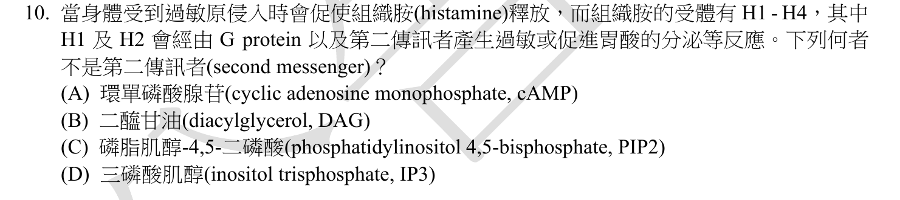
本地原卷PDF3 · 同年官方原卷PDF3 · 官方原答案PDF1（生物50題） · 已核對同年生物釋疑PDF6–8（未列本題）
官方採計：C 原答案：C
未列本輪取得的115年度生物釋疑PDF6–8；依同年答案，不宣稱沒有其他未取得公告
主分類：Ch11 Cell Communication
11.3 / Small Molecules and Ions as Second Messengers
文字目錄省略Ions as；本輪實看PDF38依真實完整條目保存，原TOC不改。 目錄行724；條目起始印刷頁223；實際目錄 PDF38
次分類：Ch11 Cell Communication
11.2 / Receptors in the Plasma Membrane
目錄行708；條目起始印刷頁217；實際目錄 PDF38
主分類理由：11.3 / Small Molecules and Ions as Second Messengers：直接比較cAMP、IP3、DAG與PIP2在第二傳訊者路徑中的角色。
次分類理由：11.2 / Receptors in the Plasma Membrane：H1/H2的背景涉及G蛋白偶聯受體啟動胞內路徑。
科學說明：官方C。在教材典型PLC路徑，膜上PIP2被裂解為IP3與DAG，後兩者為第二傳訊者，cAMP亦是。此處將PIP2視為前驅膜脂，不是否定其在更廣細胞訊號網路的調節功能。實際PDF目錄為Small Molecules and Ions as Second Messengers，本地文字目錄漏掉Ions as；採真實PDF名稱且保留原文差異。
來源涵蓋範圍：以本地Campbell實際目錄及列示正文作分類依據，原題限定與同年釋疑另存；不將正文小標冒充目錄條目。
教材正文：印刷217／PDF266、印刷218／PDF267、印刷223／PDF272、印刷224／PDF273、印刷225／PDF274
補充來源：本題未另列課本外來源
另行比較：PIP2本身有訊號功能，分類是否無法確定？
在題設GPCR／PLC的典型教材模型中PIP2是被裂解的膜脂，C為官方答案；11.3與11.2確定。已視讀實際目錄38，修正本輪catalog的漏字並保留原toc.txt。
結論：證據確認，分類疑義已解決。完整覆核紀錄
Q11 · 49.2 / Arousal and Sleep 正式分類
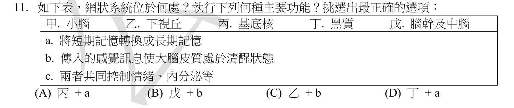
本地原卷PDF3 · 同年官方原卷PDF3 · 官方原答案PDF1（生物50題） · 已核對同年生物釋疑PDF6–8（未列本題）
官方採計：B 原答案：B
未列本輪取得的115年度生物釋疑PDF6–8；依同年答案，不宣稱沒有其他未取得公告
主分類：Ch49 Nervous Systems
49.2 / Arousal and Sleep
目錄行3255；條目起始印刷頁1094；實際目錄 PDF48
主分類理由：49.2 / Arousal and Sleep：網狀形成使大腦皮質維持覺醒，最小條目為覺醒與睡眠。
次分類理由：無另列最小次條目；完整共用表將戊與b配對，49.2 Arousal and Sleep包含功能與網狀形成；中腦屬腦幹，原表重疊語句保留，不錯建互斥構造。
科學說明：官方B，即戊＋b。網狀形成跨腦幹多區，參與感覺訊息篩選及皮質覺醒；不是單憑黑質或基底核的記憶功能。原表「腦幹及中腦」有範圍重疊，中腦本來就是腦幹的一部分，保留原表而不重畫成兩個互斥部位。
來源涵蓋範圍：以本地Campbell實際目錄及列示正文作分類依據，原題限定與同年釋疑另存；不將正文小標冒充目錄條目。
教材正文：印刷1092／PDF1141、印刷1094／PDF1143、印刷1095／PDF1144
補充來源：本題未另列課本外來源
另行比較：網狀形成的解剖位置還是覺醒功能為主？
完整共用表將戊與b配對，49.2 Arousal and Sleep包含功能與網狀形成；中腦屬腦幹，原表重疊語句保留，不錯建互斥構造。
結論：證據確認，分類疑義已解決。完整覆核紀錄
Q12 · 49.2 / Emotions 正式分類
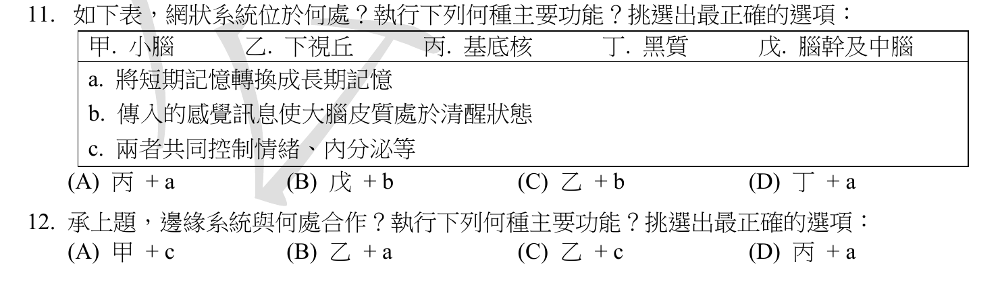
本地原卷PDF3 · 同年官方原卷PDF3 · 官方原答案PDF1（生物50題） · 同年釋疑PDF6
官方採計：C 原答案：C
115年度2026-04-17釋疑維持C
主分類：Ch49 Nervous Systems
49.2 / Emotions
目錄行3261；條目起始印刷頁1095；實際目錄 PDF48
次分類：Ch45 Hormones and the Endocrine System
45.2 / Coordination of the Endocrine and Nervous Systems
目錄行3023；條目起始印刷頁1006；實際目錄 PDF47
主分類理由：49.2 / Emotions：邊緣系統與下視丘協調情緒是本題主要辨別點。
次分類理由：45.2 / Coordination of the Endocrine and Nervous Systems：下視丘協調內分泌與神經系統補充表中內分泌功能。
科學說明：官方維持C（PDF6），乙＋c。必須連同Q11共用表閱讀。邊緣系統與下視丘協調情緒、動機及伴隨內分泌反應；海馬迴記憶功能不使乙＋a成為最合適配對。官方對小腦「與情緒無直接關聯」的簡化不擴張成小腦完全不參與情緒；本題分類依指定合作功能。
來源涵蓋範圍：以本地Campbell實際目錄及列示正文作分類依據，原題限定與同年釋疑另存；不將正文小標冒充目錄條目。
教材正文：印刷1006／PDF1055、印刷1007／PDF1056、印刷1095／PDF1144、印刷1096／PDF1145
補充來源：本題未另列課本外來源
另行比較：海馬記憶是否應取代情緒與內分泌分類？
Q11表的乙是下視丘，c是共同情緒／內分泌；同年釋疑維持C。主49.2 Emotions、次45.2神經內分泌協調，記憶只是備選排除。
結論：證據確認，分類疑義已解決。完整覆核紀錄
Q13 · 41.5 / Regulation of Appetite and Consumption 正式分類
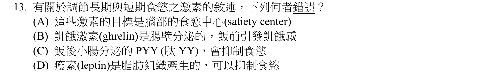
本地原卷PDF3 · 同年官方原卷PDF3 · 官方原答案PDF1（生物50題） · 已核對同年生物釋疑PDF6–8（未列本題）
官方採計：B 原答案：B
未列本輪取得的115年度生物釋疑PDF6–8；依同年答案，不宣稱沒有其他未取得公告
主分類：Ch41 Animal Nutrition
41.5 / Regulation of Appetite and Consumption
目錄行2746；條目起始印刷頁917；實際目錄 PDF46
主分類理由：41.5 / Regulation of Appetite and Consumption：ghrelin、PYY與leptin透過腦部調節食慾，屬調節食慾及能量消耗。
次分類理由：無另列最小次條目；實讀917圖說與918正文，ghrelin主要胃壁、PYY餐後抑食、leptin脂肪，41.5條目明確。題文翻譯與主要來源範圍保留，不作其他部位零表達的斷言。
科學說明：官方B。Figure41.24把餐前ghrelin來源標在胃壁，PYY在餐後抑制食慾，leptin來自脂肪組織。B以腸壁替代典型主要胃來源；此判斷不宣稱其他部位絕無ghrelin。原題satiety center譯為「食慾中心」，教材同時涵蓋飢餓與飽食調節，不以譯名差別另改採計。
來源涵蓋範圍：以本地Campbell實際目錄及列示正文作分類依據，原題限定與同年釋疑另存；不將正文小標冒充目錄條目。
教材正文：印刷917／PDF966、印刷918／PDF967、印刷919／PDF968
補充來源：本題未另列課本外來源
另行比較：腸壁與胃壁及satiety翻譯是否使全題無法分類？
實讀917圖說與918正文，ghrelin主要胃壁、PYY餐後抑食、leptin脂肪，41.5條目明確。題文翻譯與主要來源範圍保留，不作其他部位零表達的斷言。
結論：證據確認，分類疑義已解決。完整覆核紀錄
Q14 · 41.5 / Regulation of Energy Storage 正式分類
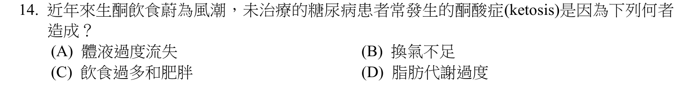
本地原卷PDF4 · 同年官方原卷PDF4 · 官方原答案PDF1（生物50題） · 同年釋疑PDF6、同年釋疑PDF7
官方採計：D 原答案：D
115年度2026-04-17釋疑維持D
主分類：Ch41 Animal Nutrition
41.5 / Regulation of Energy Storage
目錄行2743；條目起始印刷頁915；實際目錄 PDF46
次分類：Ch09 Cellular Respiration and Fermentation
9.6 / The Versatility of Catabolism
目錄行608；條目起始印刷頁182；實際目錄 PDF37
主分類理由：41.5 / Regulation of Energy Storage：未治療糖尿病的胰島素失調是所問代謝異常的情境核心。
次分類理由：9.6 / The Versatility of Catabolism：脂肪分解進入乙醯輔酶A的分解代謝原理，不誤列合成代謝。
科學說明：官方維持D（PDF6–7）。胰島素不足促進脂肪分解及肝臟酮體生成；體液流失主要是併發結果，換氣不足不是此情境的主要生化起因。題幹以ketosis對譯酮酸症並引入生酮飲食，須區分酮體增加與糖尿病酮酸中毒，不視為同義。教材提供糖尿病及分解代謝原理，肝臟產酮由同年釋疑與CDC說明補足；不是全身所有細胞都必須靠胰島素攝入葡萄糖。
來源涵蓋範圍：教材支援分類原理，未直接涵蓋的專名與細節由同年釋疑／具名補充來源補足；實讀範圍與下載限制見來源紀錄。
教材正文：印刷182／PDF231、印刷183／PDF232、印刷915／PDF964、印刷916／PDF965、印刷917／PDF966
補充來源：S14
另行比較：生酮飲食、糖尿病與脂肪代謝如何排序？
題目真正限定未治療糖尿病，故41.5能量儲存調節為主、9.6分解代謝為次。原先次條目Biosynthesis不符已改Catabolism；官方D不變，ketosis／DKA差別以同年釋疑和CDC解決。
結論：證據確認，分類疑義已解決。完整覆核紀錄
Q15 · 13.3 / The Stages of Meiosis 正式分類
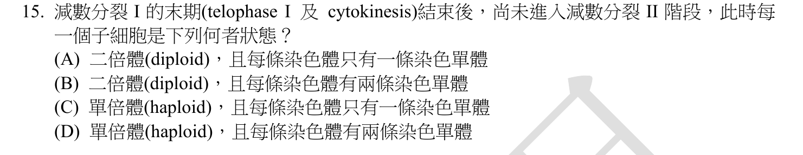
本地原卷PDF4 · 同年官方原卷PDF4 · 官方原答案PDF1（生物50題） · 已核對同年生物釋疑PDF6–8（未列本題）
官方採計：D 原答案：D
未列本輪取得的115年度生物釋疑PDF6–8；依同年答案，不宣稱沒有其他未取得公告
主分類：Ch13 Meiosis and Sexual Life Cycles
13.3 / The Stages of Meiosis
目錄行837；條目起始印刷頁259；實際目錄 PDF38
主分類理由：13.3 / The Stages of Meiosis：減數分裂I分開同源染色體但尚未分開姊妹染色單體。
次分類理由：無另列最小次條目；同源染色體已分離，n與姊妹數分開，答案D；目錄最小Meiosis stages包含兩次分裂，不另外杜撰telophase I條目。
科學說明：官方D。末期I及胞質分裂後每個子細胞為n，但每條染色體仍含兩條姊妹染色單體；第二次分裂才分離它們。倍體數、染色體數與DNA分子數分開計，不因DNA複製而稱此階段為二倍體。
來源涵蓋範圍：以本地Campbell實際目錄及列示正文作分類依據，原題限定與同年釋疑另存；不將正文小標冒充目錄條目。
教材正文：印刷259／PDF308、印刷260／PDF309、印刷261／PDF310、印刷262／PDF311
補充來源：本題未另列課本外來源
另行比較：DNA仍有兩份能否稱二倍體？
同源染色體已分離，n與姊妹數分開，答案D；目錄最小Meiosis stages包含兩次分裂，不另外杜撰telophase I條目。
結論：證據確認，分類疑義已解決。完整覆核紀錄
Q16 · 14.3 / Extending Mendelian Genetics for a Single Gene 正式分類
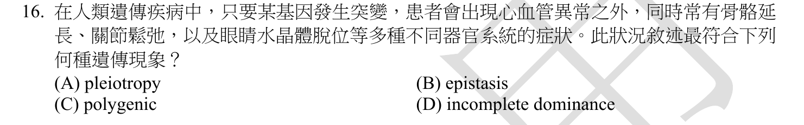
本地原卷PDF4 · 同年官方原卷PDF4 · 官方原答案PDF1（生物50題） · 已核對同年生物釋疑PDF6–8（未列本題）
官方採計：A 原答案：A
未列本輪取得的115年度生物釋疑PDF6–8；依同年答案，不宣稱沒有其他未取得公告
主分類：Ch14 Mendel and the Gene Idea
14.3 / Extending Mendelian Genetics for a Single Gene
目錄行892；條目起始印刷頁278；實際目錄 PDF38
主分類理由：14.3 / Extending Mendelian Genetics for a Single Gene：單一基因影響多器官表型符合多效性。
次分類理由：無另列最小次條目；一基因多器官符合pleiotropy，屬14.3單基因擴充；沒有多個基因共同控制或上位作用的題設。疾病名稱不是分類必要前提。
科學說明：官方A。題幹描述一個基因同時影響心血管、骨骼與眼睛；不是多基因共同決定一性狀，也不是兩基因的上位作用或雜合子不完全顯性。症狀類似Marfan作為理解例子，但分類不要求替題幹補上疾病診斷。
來源涵蓋範圍：以本地Campbell實際目錄及列示正文作分類依據，原題限定與同年釋疑另存；不將正文小標冒充目錄條目。
教材正文：印刷278／PDF327、印刷279／PDF328、印刷280／PDF329、印刷281／PDF330
補充來源：本題未另列課本外來源
另行比較：Marfan例子要分到多因子遺傳嗎？
一基因多器官符合pleiotropy，屬14.3單基因擴充；沒有多個基因共同控制或上位作用的題設。疾病名稱不是分類必要前提。
結論：證據確認，分類疑義已解決。完整覆核紀錄
Q17 · 18.1 / Positive Gene Regulation 正式分類
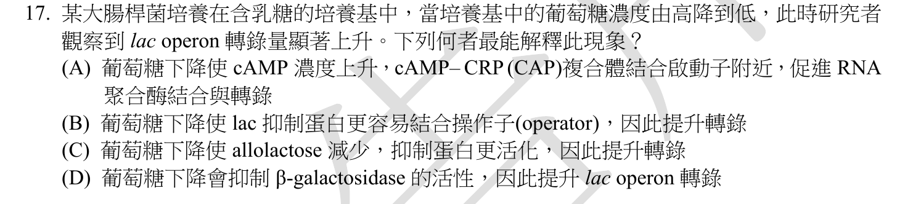
本地原卷PDF4 · 同年官方原卷PDF4 · 官方原答案PDF1（生物50題） · 已核對同年生物釋疑PDF6–8（未列本題）
官方採計：A 原答案：A
未列本輪取得的115年度生物釋疑PDF6–8；依同年答案，不宣稱沒有其他未取得公告
主分類：Ch18 Regulation of Gene Expression
18.1 / Positive Gene Regulation
目錄行1113；條目起始印刷頁369；實際目錄 PDF39
次分類：Ch18 Regulation of Gene Expression
18.1 / Repressible and Inducible Operons: Two Types of Negative Gene Regulation
目錄行1110；條目起始印刷頁368；實際目錄 PDF39
主分類理由：18.1 / Positive Gene Regulation：低葡萄糖提高cAMP–CAP活性是lac operon正調控。
次分類理由：18.1 / Repressible and Inducible Operons: Two Types of Negative Gene Regulation：乳糖存在解除抑制蛋白的負調控，形成轉錄升高的另一必要背景。
科學說明：官方A。葡萄糖降低使cAMP升高，CAP／CRP結合DNA協助RNA聚合酶；同時乳糖誘導解除lac抑制。B使抑制蛋白更易結合會壓低而非提升轉錄；C降低allolactose亦相反，D不是此轉錄變化的直接機制。兩個同章最小條目均保留。
來源涵蓋範圍：以本地Campbell實際目錄及列示正文作分類依據，原題限定與同年釋疑另存；不將正文小標冒充目錄條目。
教材正文：印刷368／PDF417、印刷369／PDF418、印刷370／PDF419
補充來源：本題未另列課本外來源
另行比較：乳糖解除抑制與CAP正調控混為同一機制？
逐项核對A：葡萄糖由高降低是正調控變因，故Positive Gene Regulation為主；負調控只列次，兩者同章最小條目均保存而章數去重。
結論：證據確認，分類疑義已解決。完整覆核紀錄
Q18 · 18.2 / Regulation of Transcription Initiation 正式分類
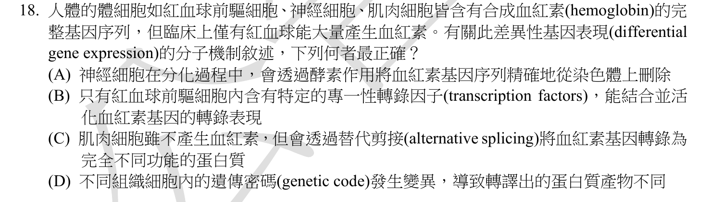
本地原卷PDF4 · 同年官方原卷PDF4 · 官方原答案PDF1（生物50題） · 已核對同年生物釋疑PDF6–8（未列本題）
官方採計：B 原答案：B
未列本輪取得的115年度生物釋疑PDF6–8；依同年答案，不宣稱沒有其他未取得公告
主分類：Ch18 Regulation of Gene Expression
18.2 / Regulation of Transcription Initiation
目錄行1126；條目起始印刷頁373；實際目錄 PDF39
次分類：Ch18 Regulation of Gene Expression
18.2 / Differential Gene Expression
目錄行1120；條目起始印刷頁370；實際目錄 PDF39
主分類理由：18.2 / Regulation of Transcription Initiation：專一性轉錄因子與調控DNA組合控制轉錄起始。
次分類理由：18.2 / Differential Gene Expression：分化細胞通常保有相同基因組但表現不同基因。
科學說明：官方B。紅血球前驅細胞的轉錄因子及調控序列組合使血紅素基因大量表現；不靠刪除其他細胞的基因或更換遺傳密碼。題幹後半把「紅血球大量產生」泛稱，需回到前驅細胞；成熟哺乳類紅血球缺核，不能再轉錄。B的「只有」指此調控組合情境，不能推成每一轉錄因子都在其他細胞完全不存在。
來源涵蓋範圍：以本地Campbell實際目錄及列示正文作分類依據，原題限定與同年釋疑另存；不將正文小標冒充目錄條目。
教材正文：印刷370／PDF419、印刷373／PDF422、印刷374／PDF423、印刷375／PDF424、印刷376／PDF425、印刷935／PDF984、印刷936／PDF985
補充來源：本題未另列課本外來源
另行比較：成熟紅血球無核是否與B矛盾？
原題已先提紅血球前驅細胞，B也明指前驅細胞。實看935/PDF984確認成熟紅血球缺核，將後半泛稱另存；18.2轉錄起始／差異性表現分類仍可確定。
結論：證據確認，分類疑義已解決。完整覆核紀錄
Q19 · 16.2 / Replicating the Ends of DNA Molecules 正式分類
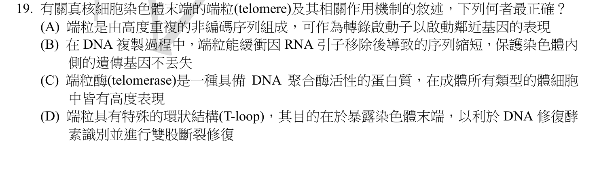
本地原卷PDF4 · 同年官方原卷PDF4 · 官方原答案PDF1（生物50題） · 已核對同年生物釋疑PDF6–8（未列本題）
官方採計：B 原答案：B
未列本輪取得的115年度生物釋疑PDF6–8；依同年答案，不宣稱沒有其他未取得公告
主分類：Ch16 The Molecular Basis of Inheritance
16.2 / Replicating the Ends of DNA Molecules
目錄行1019；條目起始印刷頁328；實際目錄 PDF39
主分類理由：16.2 / Replicating the Ends of DNA Molecules：線性染色體末端複製問題及端粒酶正是教材最小條目。
次分類理由：無另列最小次條目；此題整體測末端複製限制與保護，16.2末端複製最直接；C的所有體細胞高表現不成立，D將末端隱蔽保護寫成暴露修復。
科學說明：官方B。端粒重複序列緩衝末端複製損失並保護末端；不是主要作為鄰基因啟動子，也不是故意暴露DNA讓其被當斷裂修復。端粒酶為含RNA模板的核糖核蛋白，具逆轉錄酶活性；不能概括成所有成體體細胞均高表現。
來源涵蓋範圍：以本地Campbell實際目錄及列示正文作分類依據，原題限定與同年釋疑另存；不將正文小標冒充目錄條目。
教材正文：印刷328／PDF377、印刷329／PDF378、印刷330／PDF379
補充來源：本題未另列課本外來源
另行比較：端粒酶屬DNA修復或反轉錄工具？
此題整體測末端複製限制與保護，16.2末端複製最直接；C的所有體細胞高表現不成立，D將末端隱蔽保護寫成暴露修復。
結論：證據確認，分類疑義已解決。完整覆核紀錄
Q20 · 50.2 / Hearing and Equilibrium in Other Vertebrates 正式分類
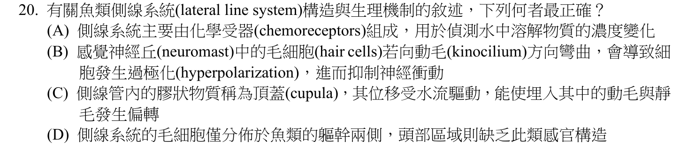
本地原卷PDF5 · 同年官方原卷PDF5 · 官方原答案PDF1（生物50題） · 已核對同年生物釋疑PDF6–8（未列本題）
官方採計：C 原答案：C
未列本輪取得的115年度生物釋疑PDF6–8；依同年答案，不宣稱沒有其他未取得公告
主分類：Ch50 Sensory and Motor Mechanisms
50.2 / Hearing and Equilibrium in Other Vertebrates
目錄行3354；條目起始印刷頁1116；實際目錄 PDF49
次分類：Ch50 Sensory and Motor Mechanisms
50.2 / Hearing and Equilibrium in Mammals
目錄行3351；條目起始印刷頁1112；實際目錄 PDF49
主分類理由：50.2 / Hearing and Equilibrium in Other Vertebrates：魚類側線在其他脊椎動物聽覺和平衡條目中直接描述。
次分類理由：50.2 / Hearing and Equilibrium in Mammals：毛細胞偏轉與受器電位可由哺乳類毛細胞的機械轉導作比較。
科學說明：官方C。水流使神經丘毛細胞所嵌的cupula偏轉，產生機械轉導；朝較長毛方向彎曲是去極化而非B的過極化。cupula是局部神經丘的膠狀帽，不是整條側線管都充滿同一塊膠；Figure50.14顯示頭至尾均有此感覺系統。
來源涵蓋範圍：以本地Campbell實際目錄及列示正文作分類依據，原題限定與同年釋疑另存；不將正文小標冒充目錄條目。
教材正文：印刷1113／PDF1162、印刷1114／PDF1163、印刷1115／PDF1164、印刷1116／PDF1165、印刷1117／PDF1166
補充來源：本題未另列課本外來源
另行比較：側線是化學受器或哺乳類耳構造？
1116 Figure50.14確認魚頭尾側線及cupula，屬50.2其他脊椎動物聽覺平衡；毛細胞機械轉導比較列同章次目。C按局部神經丘解讀，保留管內膠質措辭限制。
結論：證據確認，分類疑義已解決。完整覆核紀錄
Q21 · 45.2 / Feedback Regulation 正式分類
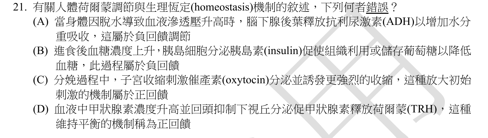
本地原卷PDF5 · 同年官方原卷PDF5 · 官方原答案PDF1（生物50題） · 已核對同年生物釋疑PDF6–8（未列本題）
官方採計：D 原答案：D
未列本輪取得的115年度生物釋疑PDF6–8；依同年答案，不宣稱沒有其他未取得公告
主分類：Ch45 Hormones and the Endocrine System
45.2 / Feedback Regulation
目錄行3020；條目起始印刷頁1005；實際目錄 PDF47
次分類：Ch45 Hormones and the Endocrine System
45.2 / Thyroid Regulation: A Hormone Cascade Pathway
目錄行3026；條目起始印刷頁1008；實際目錄 PDF47
主分類理由：45.2 / Feedback Regulation：辨認正負回饋的方向是四個荷爾蒙例子共同考點。
次分類理由：45.2 / Thyroid Regulation: A Hormone Cascade Pathway：TRH–TSH–甲狀腺激素軸提供D的具體負回饋路徑。
科學說明：官方D。甲狀腺激素回抑上游釋放激素屬負回饋；ADH回復滲透平衡與胰島素降低血糖也屬負回饋。分娩催產素放大收縮是正回饋。不同激素例子不再各自新增一章，保留回饋及甲狀腺兩個同章最小次目。
來源涵蓋範圍：以本地Campbell實際目錄及列示正文作分類依據，原題限定與同年釋疑另存；不將正文小標冒充目錄條目。
教材正文：印刷1004／PDF1053、印刷1005／PDF1054、印刷1006／PDF1055、印刷1008／PDF1057、印刷1009／PDF1058
補充來源：本題未另列課本外來源
另行比較：甲狀腺單一疾病是否為主？
測的是回饋正負號，D把回抑錯叫正回饋；主45.2 Feedback Regulation、次Thyroid Regulation。同章兩條不產生兩次章級計數。
結論：證據確認，分類疑義已解決。完整覆核紀錄
Q22 · 21.5 / Rearrangements of Parts of Genes: Exon Duplication and Exon Shuffling 正式分類
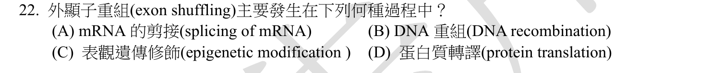
本地原卷PDF5 · 同年官方原卷PDF5 · 官方原答案PDF1（生物50題） · 已核對同年生物釋疑PDF6–8（未列本題）
官方採計：B 原答案：B
未列本輪取得的115年度生物釋疑PDF6–8；依同年答案，不宣稱沒有其他未取得公告
主分類：Ch21 Genomes and Their Evolution
21.5 / Rearrangements of Parts of Genes: Exon Duplication and Exon Shuffling
目錄行1349；條目起始印刷頁456；實際目錄 PDF40
次分類：Ch17 Gene Expression: From Gene to Protein
17.3 / Split Genes and RNA Splicing
目錄行1062；條目起始印刷頁345；實際目錄 PDF39
主分類理由：21.5 / Rearrangements of Parts of Genes: Exon Duplication and Exon Shuffling：基因組DNA重排帶來外顯子重新組合，直接對應外顯子複製和重組。
次分類理由：17.3 / Split Genes and RNA Splicing：RNA剪接作為需排除的相鄰機制，保留其分子層次差別。
科學說明：官方B。exon shuffling指DNA重組改變不同外顯子或蛋白結構域的組合；mRNA剪接是移除內含子、連接現有外顯子。替代剪接可產生不同RNA產物，仍不能把題名的基因組演化重組改稱RNA剪接。
來源涵蓋範圍：以本地Campbell實際目錄及列示正文作分類依據，原題限定與同年釋疑另存；不將正文小標冒充目錄條目。
教材正文：印刷345／PDF394、印刷346／PDF395、印刷456／PDF505、印刷457／PDF506
補充來源：本題未另列課本外來源
另行比較：mRNA替代剪接能否等於exon shuffling？
DNA重組才會重排基因組外顯子，主21.5條目精確；17.3保留RNA剪接作相鄰機制區辨，官方B。
結論：證據確認，分類疑義已解決。完整覆核紀錄
Q23 · 19.3 / Emerging Viral Diseases 正式分類
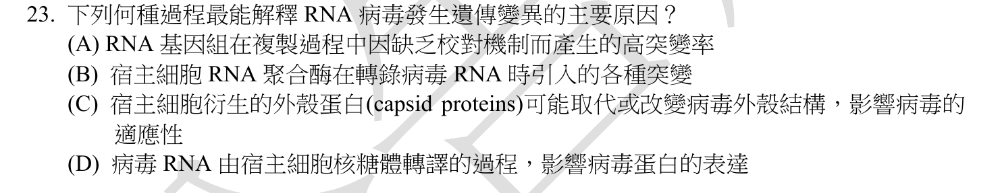
本地原卷PDF5 · 同年官方原卷PDF5 · 官方原答案PDF1（生物50題） · 已核對同年生物釋疑PDF6–8（未列本題）
官方採計：A 原答案：A
未列本輪取得的115年度生物釋疑PDF6–8；依同年答案，不宣稱沒有其他未取得公告
主分類：Ch19 Viruses
19.3 / Emerging Viral Diseases
目錄行1215；條目起始印刷頁409；實際目錄 PDF40
次分類：Ch19 Viruses
19.2 / Replicative Cycles of Animal Viruses
目錄行1202；條目起始印刷頁404；實際目錄 PDF40
主分類理由：19.3 / Emerging Viral Diseases：RNA病毒高突變率及新興病毒在教材相關條目直接討論。
次分類理由：19.2 / Replicative Cycles of Animal Viruses：動物病毒複製方式說明RNA依賴RNA聚合酶的角色。
科學說明：官方A。許多RNA病毒的低保真複製造成高突變率；不是宿主核糖體把翻譯變化直接寫回RNA基因組。原題「缺乏校對」是一般化敘述，有冠狀病毒nsp14–nsp10核酸外切酶校對的例外；PNAS結構與生化研究已支援此限制，不因例外改動官方採計。所讀教材印刷410/PDF459旁例寫流感基因組nine segments；CDC的A/B流感為eight RNA gene segments，差異另存，分節數不作本題答案依據。
來源涵蓋範圍：教材支援分類原理，未直接涵蓋的專名與細節由同年釋疑／具名補充來源補足；實讀範圍與下載限制見來源紀錄。
教材正文：印刷404／PDF453、印刷405／PDF454、印刷406／PDF455、印刷409／PDF458、印刷410／PDF459
補充來源：S23
另行比較：冠狀病毒有校對是否必須改採計？
PNAS作者PDF1直接支援ExoN校對例外。A仍是官方對常見RNA病毒的概括；主19.3高突變／新興病毒、次19.2複製，科學例外另存且不假稱所有病毒皆無校對。
結論：證據確認，分類疑義已解決。完整覆核紀錄
Q24 · 8.4 / How Enzymes Speed Up Reactions 正式分類
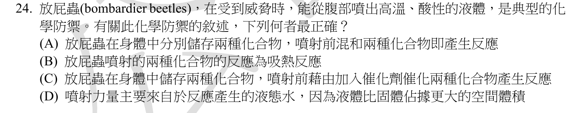
本地原卷PDF5 · 同年官方原卷PDF5 · 官方原答案PDF1（生物50題） · 已核對同年生物釋疑PDF6–8（未列本題）
官方採計：C 原答案：C
未列本輪取得的115年度生物釋疑PDF6–8；依同年答案，不宣稱沒有其他未取得公告
主分類：Ch08 An Introduction to Metabolism
8.4 / How Enzymes Speed Up Reactions
目錄行520；條目起始印刷頁154；實際目錄 PDF37
次分類：Ch08 An Introduction to Metabolism
8.4 / The Activation Energy Barrier
目錄行517；條目起始印刷頁153；實際目錄 PDF37
主分類理由：8.4 / How Enzymes Speed Up Reactions：核心為催化劑使儲存反應物快速反應，主列酵素如何加速反應。
次分類理由：8.4 / The Activation Energy Barrier：活化能屏障說明為何先儲存而須受控啟動。
科學說明：官方C。儲存腔含hydroquinones及H2O2，反應腔的catalases／peroxidases催化後產生熱及刺激性醌類噴霧。A把兩反應物分開儲存、單靠混合即反應說成核心，少了酵素控制；B吸熱相反，D液態比固態體積大不是噴射壓力原因。原題「酸性」無本次取得的pH測值支援，保存原詞但不以此代替醌類刺激性。
來源涵蓋範圍：教材支援分類原理，未直接涵蓋的專名與細節由同年釋疑／具名補充來源補足；實讀範圍與下載限制見來源紀錄。
教材正文：印刷153／PDF202、印刷154／PDF203、印刷155／PDF204
補充來源：S24
另行比較：化學防禦是否應主列動物行為或氧化還原？
選項關鍵是有無催化劑及反應能量，主8.4酵素加速、次活化能。PNAS導論索引段支援共存前驅物與另腔酵素；未取得全文的界線與酸性缺pH證據保留。
結論：證據確認，分類疑義已解決。完整覆核紀錄
Q25 · 43.3 / B Cells and Antibodies: A Response to Extracellular Pathogens 正式分類
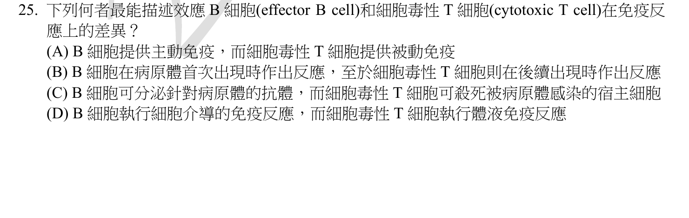
本地原卷PDF5 · 同年官方原卷PDF5 · 官方原答案PDF1（生物50題） · 已核對同年生物釋疑PDF6–8（未列本題）
官方採計：C 原答案：C
未列本輪取得的115年度生物釋疑PDF6–8；依同年答案，不宣稱沒有其他未取得公告
主分類：Ch43 The Immune System
43.3 / B Cells and Antibodies: A Response to Extracellular Pathogens
目錄行2899；條目起始印刷頁964；實際目錄 PDF47
次分類：Ch43 The Immune System
43.3 / Cytotoxic T Cells: A Response to Infected Host Cells
目錄行2902；條目起始印刷頁966；實際目錄 PDF47
主分類理由：43.3 / B Cells and Antibodies: A Response to Extracellular Pathogens：效應B細胞分泌抗體是選項中體液免疫的功能。
次分類理由：43.3 / Cytotoxic T Cells: A Response to Infected Host Cells：細胞毒性T細胞殺死感染宿主細胞形成直接比較。
科學說明：官方C。效應B細胞分化成漿細胞分泌抗體，CTL以細胞毒作用清除感染細胞；兩者都屬適應性主動免疫，且皆能形成記憶。B的首次／後續二分不成立，D將體液與細胞介導角色倒置。
來源涵蓋範圍：以本地Campbell實際目錄及列示正文作分類依據，原題限定與同年釋疑另存；不將正文小標冒充目錄條目。
教材正文：印刷964／PDF1013、印刷965／PDF1014、印刷966／PDF1015、印刷967／PDF1016、印刷968／PDF1017
補充來源：本題未另列課本外來源
另行比較：先後免疫反應與主動／被動是否為區分主軸？
正確字母重新核對為C，並非B。效應B抗體與CTL殺宿主細胞的直接功能比較，兩個43.3最小條目足夠；記憶及主動被動只作錯項理由。
結論：證據確認，分類疑義已解決。完整覆核紀錄
Q26 · 23.4 / Sexual Selection 正式分類
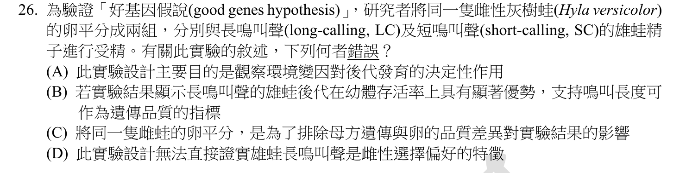
本地原卷PDF6 · 同年官方原卷PDF6 · 官方原答案PDF1（生物50題） · 已核對同年生物釋疑PDF6–8（未列本題）
官方採計：A 原答案：A
未列本輪取得的115年度生物釋疑PDF6–8；依同年答案，不宣稱沒有其他未取得公告
主分類：Ch23 The Evolution of Populations
23.4 / Sexual Selection
目錄行1471；條目起始印刷頁499；實際目錄 PDF41
次分類：Ch51 Animal Behavior
51.3 / Mating Behavior and Mate Choice
目錄行3434；條目起始印刷頁1149；實際目錄 PDF49
主分類理由：23.4 / Sexual Selection：Figure23.16即灰樹蛙分卵實驗，主分類性擇比籠統動物行為更貼近。
次分類理由：51.3 / Mating Behavior and Mate Choice：配偶選擇與好基因的行為背景有實質關係，保存為次分類。
科學說明：官方A。分卵並在共同環境養育，旨在比較父系遺傳品質，非測試環境的決定性作用。C控制母方家系及卵品質的系統差異，不代表同母各卵基因型完全相同。B有「若顯著」條件；教材兩年度存活率不是都顯著，不能寫成已普遍證實。D成立：人工受精子代試驗本身不直接測雌性偏好，偏好來自先前試驗。
來源涵蓋範圍：以本地Campbell實際目錄及列示正文作分類依據，原題限定與同年釋疑另存；不將正文小標冒充目錄條目。
教材正文：印刷499／PDF548、印刷500／PDF549、印刷1149／PDF1198、印刷1150／PDF1199、印刷1151／PDF1200、印刷1152／PDF1201
補充來源：本題未另列課本外來源
另行比較：第51章配偶選擇與第23章性擇何者為主？
重新定位到印刷500/PDF549原實驗Figure23.16，主改23.4 Sexual Selection，51.3次。實讀兩年度表格，1996存活率NSD；B是條件敘述，C控制家系非克隆卵，D不測偏好，A才錯。
結論：證據確認，分類疑義已解決。完整覆核紀錄
Q27 · 29.2 / The Ecological and Economic Importance of Mosses 正式分類
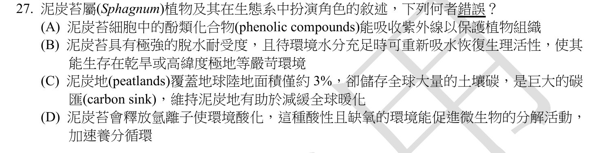
本地原卷PDF6 · 同年官方原卷PDF6 · 官方原答案PDF1（生物50題） · 已核對同年生物釋疑PDF6–8（未列本題）
官方採計：D 原答案：D
未列本輪取得的115年度生物釋疑PDF6–8；依同年答案，不宣稱沒有其他未取得公告
主分類：Ch29 Plant Diversity I: How Plants Colonized Land
29.2 / The Ecological and Economic Importance of Mosses
目錄行1883；條目起始印刷頁627；實際目錄 PDF43
主分類理由：29.2 / The Ecological and Economic Importance of Mosses：泥炭苔的酚類、泥炭累積與碳儲存都直接列在苔蘚生態與經濟重要性。
次分類理由：無另列最小次條目；苔蘚條目627–628直接包含酚類、酸性低氧與碳儲存，主29.2比概括生態章更準確。D分解方向錯；B把一般苔蘚耐旱移到整個Sphagnum屬的範圍問題另留。
科學說明：官方D。泥炭地低pH、低氧及低溫抑制分解，有利有機碳保存，D稱促進分解方向相反。教材先講一般苔蘚脫水耐受，再講濕地Sphagnum；原題B把一般苔蘚耐旱概括整個泥炭苔屬，應保留此範圍差異，不主張所有種都有同等極強耐旱性。
來源涵蓋範圍：以本地Campbell實際目錄及列示正文作分類依據，原題限定與同年釋疑另存；不將正文小標冒充目錄條目。
教材正文：印刷624／PDF673、印刷627／PDF676、印刷628／PDF677
補充來源：本題未另列課本外來源
另行比較：是否應主歸碳循環而不是苔蘚？
苔蘚條目627–628直接包含酚類、酸性低氧與碳儲存，主29.2比概括生態章更準確。D分解方向錯；B把一般苔蘚耐旱移到整個Sphagnum屬的範圍問題另留。
結論：證據確認，分類疑義已解決。完整覆核紀錄
Q28 · 38.1 / Methods of Pollination 正式分類
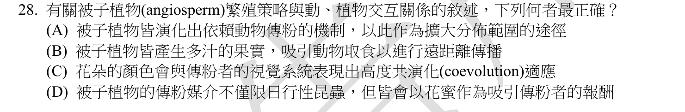
本地原卷PDF6 · 同年官方原卷PDF6 · 官方原答案PDF1（生物50題） · 已核對同年生物釋疑PDF6–8（未列本題）
官方採計：C 原答案：C
未列本輪取得的115年度生物釋疑PDF6–8；依同年答案，不宣稱沒有其他未取得公告
主分類：Ch38 Angiosperm Reproduction and Biotechnology
38.1 / Methods of Pollination
目錄行2483；條目起始印刷頁825；實際目錄 PDF45
次分類：Ch30 Plant Diversity II: The Evolution of Seed Plants
30.3 / Characteristics of Angiosperms
目錄行1939；條目起始印刷頁644；實際目錄 PDF43
主分類理由：38.1 / Methods of Pollination：花色與傳粉者的相互適應屬傳粉方式，教材Figure38.4–5最直接。
次分類理由：30.3 / Characteristics of Angiosperms：花與果實的多樣化用來排除「皆」動物傳粉與「皆」多汁果實。
科學說明：官方C。花色、形狀及氣味可與特定傳粉者感官適應；A忽略風媒與水媒，B忽略乾果及其他散布方式，D忽略花粉報酬與無報酬欺騙授粉。C是常見適應關係，不必解讀為每種花與每種訪客都已證實互惠共演化。
來源涵蓋範圍：以本地Campbell實際目錄及列示正文作分類依據，原題限定與同年釋疑另存；不將正文小標冒充目錄條目。
教材正文：印刷644／PDF693、印刷645／PDF694、印刷646／PDF695、印刷647／PDF696、印刷824／PDF873、印刷825／PDF874
補充來源：本題未另列課本外來源
另行比較：果實散布或傳粉共演化哪個直接對正解？
C涉及花色與傳粉者視覺，38.1 Methods of Pollination比30.3大類更貼題，主分類已改；30.3只作花果多樣性次分類，避免把授粉與種子散布混同。
結論：證據確認，分類疑義已解決。完整覆核紀錄
Q29 · 34.5 / Derived Characters of Amniotes 正式分類
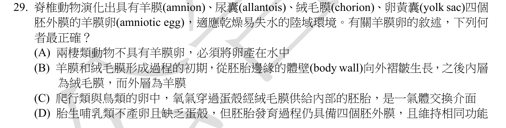
本地原卷PDF6 · 同年官方原卷PDF6 · 官方原答案PDF1（生物50題） · 同年釋疑PDF7
官方採計：C 原答案：C
115年度2026-04-17釋疑維持C
主分類：Ch34 The Origin and Evolution of Vertebrates
34.5 / Derived Characters of Amniotes
目錄行2212；條目起始印刷頁734；實際目錄 PDF44
次分類：Ch47 Animal Development
47.2 / Developmental Adaptations of Amniotes
目錄行3147；條目起始印刷頁1053；實際目錄 PDF48
次分類：Ch34 The Origin and Evolution of Vertebrates
34.4 / Amphibians
目錄行2205；條目起始印刷頁731；實際目錄 PDF44
主分類理由：34.5 / Derived Characters of Amniotes：羊膜動物衍生特徵包含四種胚外膜及陸生適應。
次分類理由：47.2 / Developmental Adaptations of Amniotes：胚外膜在發育中形成並於哺乳類改變功能；34.4 / Amphibians：兩棲類繁殖多樣性用來檢查A的絕對水中產卵說法。
科學說明：官方維持C（PDF7）。鳥、爬行類絨毛膜與尿囊協同氣體交換；B內羊膜、外絨毛膜寫反。兩棲類無羊膜卵，但可在潮濕陸地產卵。胎生哺乳類仍有四膜，卵黃囊與尿囊功能已有轉變，不能沿用帶殼卵完全相同功能。
來源涵蓋範圍：以本地Campbell實際目錄及列示正文作分類依據，原題限定與同年釋疑另存；不將正文小標冒充目錄條目。
教材正文：印刷732／PDF781、印刷733／PDF782、印刷734／PDF783、印刷735／PDF784、印刷1053／PDF1102、印刷1054／PDF1103
補充來源：本題未另列課本外來源
另行比較：四個胚外膜是否在胎生哺乳類維持完全一樣功能？
同年PDF7明確否定D的功能不變，C氣體交換成立；34.5主、47.2與34.4次分别支援胚膜及兩棲產卵變異。同章次目仍保存。
結論：證據確認，分類疑義已解決。完整覆核紀錄
Q30 · 36.2 / Short-Distance Transport of Water Across Plasma Membranes 正式分類
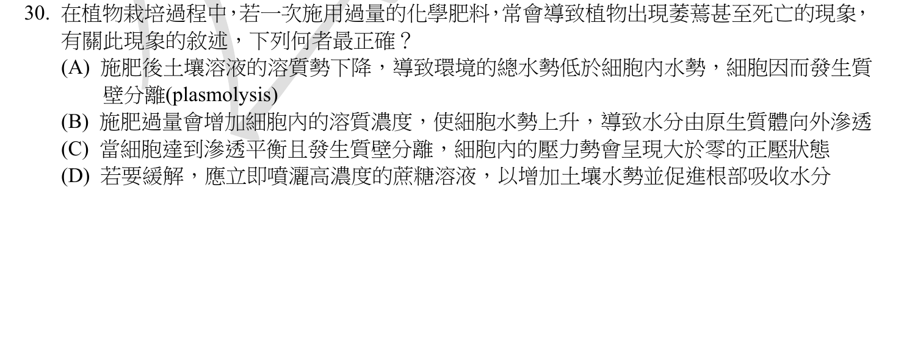
本地原卷PDF6 · 同年官方原卷PDF6 · 官方原答案PDF1（生物50題） · 已核對同年生物釋疑PDF6–8（未列本題）
官方採計：A 原答案：A
未列本輪取得的115年度生物釋疑PDF6–8；依同年答案，不宣稱沒有其他未取得公告
主分類：Ch36 Resource Acquisition and Transport in Vascular Plants
36.2 / Short-Distance Transport of Water Across Plasma Membranes
目錄行2365；條目起始印刷頁788；實際目錄 PDF45
次分類：Ch37 Soil and Plant Nutrition
37.1 / Soil Conservation and Sustainable Agriculture
目錄行2443；條目起始印刷頁807；實際目錄 PDF45
主分類理由：36.2 / Short-Distance Transport of Water Across Plasma Membranes：外界溶質勢降低造成水分滲出及質壁分離，主列水勢。
次分類理由：37.1 / Soil Conservation and Sustainable Agriculture：肥料增加土壤溶質的農業情境須與施肥方式聯繫。
科學說明：官方A。ψ＝ψs＋ψp；外液高溶質使其ψ降低，若低於細胞則水外流。溶質越多ψs越負，B方向錯；質壁分離時膨壓近零而非C的正膨壓。再加濃糖會進一步降低外界水勢，D不成立。
來源涵蓋範圍：以本地Campbell實際目錄及列示正文作分類依據，原題限定與同年釋疑另存；不將正文小標冒充目錄條目。
教材正文：印刷788／PDF837、印刷789／PDF838、印刷790／PDF839、印刷791／PDF840、印刷808／PDF857、印刷809／PDF858
補充來源：本題未另列課本外來源
另行比較：高肥料降低哪一側水勢，平衡後壓力勢為何？
重算外液ψs下降→總ψ較低→水外流，質壁分離膨壓近0；主36.2，次37.1土壤肥料。無需把糖液當作補救或編造實驗數值。
結論：證據確認，分類疑義已解決。完整覆核紀錄
Q31 · 37.3 / Epiphytes, Parasitic Plants, and Carnivorous Plants 正式分類
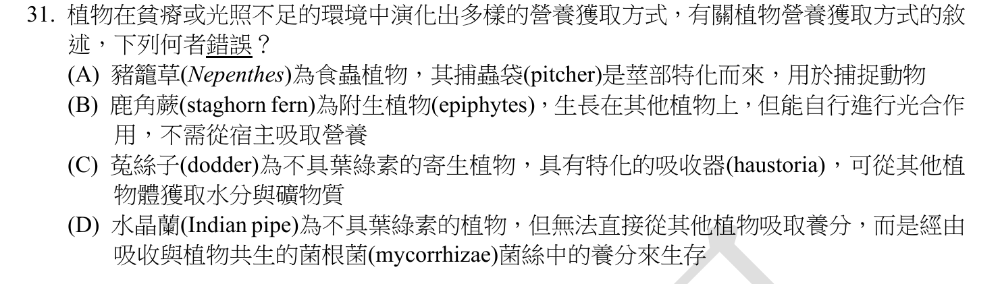
本地原卷PDF7 · 同年官方原卷PDF7 · 官方原答案PDF1（生物50題） · 同年釋疑PDF7、同年釋疑PDF8
官方採計：A 原答案：A
115年度2026-04-17釋疑維持A
主分類：Ch37 Soil and Plant Nutrition
37.3 / Epiphytes, Parasitic Plants, and Carnivorous Plants
目錄行2469；條目起始印刷頁818；實際目錄 PDF45
主分類理由：37.3 / Epiphytes, Parasitic Plants, and Carnivorous Plants：食蟲、附生、寄生與菌異營都在植物特殊營養適應最小條目比較。
次分類理由：無另列最小次條目；官方PDF7–8用菌異營與「極低至缺乏」補足，維持A。37.3原目錄一次涵蓋所有策略，豬籠草葉特化確定；保留教材較寬parasite用語，無新增假條目。
科學說明：官方維持A（PDF7–8）。豬籠草捕蟲袋是葉的特化而非莖；鹿角蕨附生不等於寄生。官方補充菟絲子葉綠素「極低至缺乏」，比原選項C絕對「不具」更精確，保留此差別。水晶蘭經菌根菌間接取得碳，屬菌異營；教材nonphotosynthetic parasite用語不抹去同年釋疑更具體的營養途徑。
來源涵蓋範圍：以本地Campbell實際目錄及列示正文作分類依據，原題限定與同年釋疑另存；不將正文小標冒充目錄條目。
教材正文：印刷818／PDF867、印刷819／PDF868、印刷820／PDF869
補充來源：本題未另列課本外來源
另行比較：水晶蘭算直接寄生，菟絲子一律無葉綠素？
官方PDF7–8用菌異營與「極低至缺乏」補足，維持A。37.3原目錄一次涵蓋所有策略，豬籠草葉特化確定；保留教材較寬parasite用語，無新增假條目。
結論：證據確認，分類疑義已解決。完整覆核紀錄
Q32 · 9.5 / Types of Fermentation 正式分類
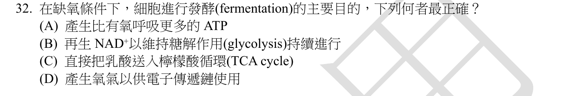
本地原卷PDF7 · 同年官方原卷PDF7 · 官方原答案PDF1（生物50題） · 已核對同年生物釋疑PDF6–8（未列本題）
官方採計：B 原答案：B
未列本輪取得的115年度生物釋疑PDF6–8；依同年答案，不宣稱沒有其他未取得公告
主分類：Ch09 Cellular Respiration and Fermentation
9.5 / Types of Fermentation
目錄行595；條目起始印刷頁180；實際目錄 PDF37
次分類：Ch09 Cellular Respiration and Fermentation
9.5 / Comparing Fermentation with Anaerobic and Aerobic Respiration
目錄行598；條目起始印刷頁181；實際目錄 PDF37
主分類理由：9.5 / Types of Fermentation：發酵以有機分子承接電子再生NAD+是主要功能。
次分類理由：9.5 / Comparing Fermentation with Anaerobic and Aerobic Respiration：與有氧呼吸比較可排除ATP更多與產氧的說法。
科學說明：官方B。發酵使NADH氧化回NAD+，讓糖解作用持續產生底物層次磷酸化ATP；發酵本身不產氧，也不比完整有氧呼吸產更多ATP。乳酸生成是某一發酵途徑，不能當成直接進入TCA循環的普遍目的。
來源涵蓋範圍：以本地Campbell實際目錄及列示正文作分類依據，原題限定與同年釋疑另存；不將正文小標冒充目錄條目。
教材正文：印刷179／PDF228、印刷180／PDF229、印刷181／PDF230
補充來源：本題未另列課本外來源
另行比較：發酵製ATP與再生NAD+哪個是直接所問？
發酵還原有機受體再生NAD+，維持糖解；B。9.5 Types of Fermentation為最小主目，Comparing Fermentation作次，拒絕產氧及更多ATP解釋。
結論：證據確認，分類疑義已解決。完整覆核紀錄
Q33 · 10.5 / C4 Plants 正式分類
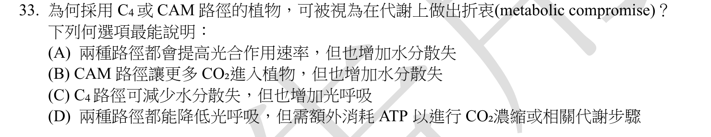
本地原卷PDF7 · 同年官方原卷PDF7 · 官方原答案PDF1（生物50題） · 已核對同年生物釋疑PDF6–8（未列本題）
官方採計：D 原答案：D
未列本輪取得的115年度生物釋疑PDF6–8；依同年答案，不宣稱沒有其他未取得公告
主分類：Ch10 Photosynthesis
10.5 / C4 Plants
目錄行676；條目起始印刷頁203；實際目錄 PDF37
次分類：Ch10 Photosynthesis
10.5 / CAM Plants
目錄行679；條目起始印刷頁205；實際目錄 PDF37
主分類理由：10.5 / C4 Plants：C4固碳濃縮CO2的額外能量成本與降低光呼吸形成折衷。
次分類理由：10.5 / CAM Plants：CAM的夜間固定與日間脫羧同樣涉及濃縮與節水成本。
科學說明：官方D。C4與CAM以額外能量需求換取乾熱情境的CO2供應與較低光呼吸；不是無條件提高光合速率，亦非增加失水或增加光呼吸。成本大小隨物種、代謝路徑及環境而變，不指定題幹未提供的統一ATP定量。
來源涵蓋範圍：以本地Campbell實際目錄及列示正文作分類依據，原題限定與同年釋疑另存；不將正文小標冒充目錄條目。
教材正文：印刷203／PDF252、印刷204／PDF253、印刷205／PDF254、印刷206／PDF255
補充來源：本題未另列課本外來源
另行比較：CAM與C4節水是否一定增加光合速率？
題目強調metabolic compromise，D的額外ATP與降低光呼吸才同時合適；10.5兩條最小葉保留，沒有足夠資料指定統一額外ATP數。
結論：證據確認，分類疑義已解決。完整覆核紀錄
Q34 · 37.3 / Fungi and Plant Nutrition 正式分類
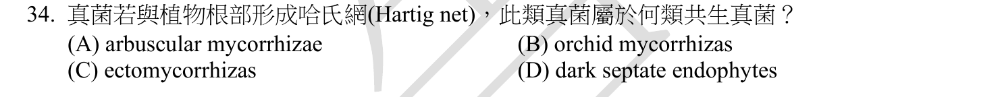
本地原卷PDF7 · 同年官方原卷PDF7 · 官方原答案PDF1（生物50題） · 已核對同年生物釋疑PDF6–8（未列本題）
官方採計：C 原答案：C
未列本輪取得的115年度生物釋疑PDF6–8；依同年答案，不宣稱沒有其他未取得公告
主分類：Ch37 Soil and Plant Nutrition
37.3 / Fungi and Plant Nutrition
目錄行2466；條目起始印刷頁817；實際目錄 PDF45
次分類：Ch31 Fungi
31.1 / Specialized Hyphae in Mycorrhizal Fungi
目錄行1972；條目起始印刷頁656；實際目錄 PDF43
主分類理由：37.3 / Fungi and Plant Nutrition：哈氏網為外生菌根的根細胞間菌絲網，主列菌根與植物營養。
次分類理由：31.1 / Specialized Hyphae in Mycorrhizal Fungi：真菌與植物互利共生的生活方式補充跨章關係。
科學說明：官方C。Hartig net位於根的表皮／外皮層細胞間，外側可形成菌鞘，屬ectomycorrhizas；叢枝菌根則形成深入細胞壁範圍而被宿主膜包住的arbuscules。Campbell說明兩種菌根但本段未使用Hartig名稱，名稱對照由具名期刊來源補足，不假稱教材原有此字。
來源涵蓋範圍：教材支援分類原理，未直接涵蓋的專名與細節由同年釋疑／具名補充來源補足；實讀範圍與下載限制見來源紀錄。
教材正文：印刷656／PDF705、印刷817／PDF866、印刷818／PDF867
補充來源：S34
另行比較：Hartig net是否可等同arbuscule？
期刊正文與圖說確認其為細胞間菌絲網、外側菌鞘，主37.3菌根營養、次31.1特化菌絲。術語不在本地Campbell該段，明列補充來源而不冒充書中文字。
結論：證據確認，分類疑義已解決。完整覆核紀錄
Q35 · 47.3 / Cell Fate Determination and Pattern Formation by Inductive Signals 正式分類
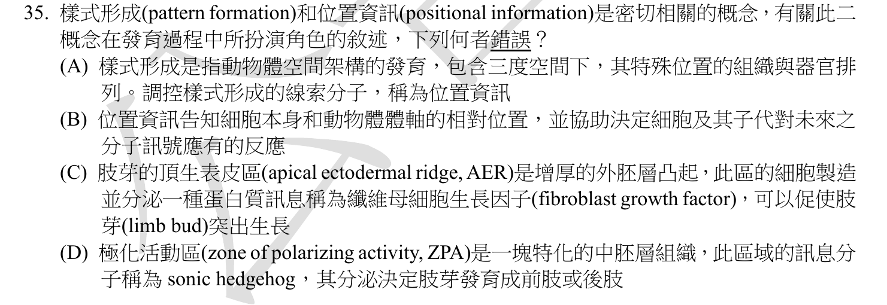
本地原卷PDF7 · 同年官方原卷PDF7 · 官方原答案PDF1（生物50題） · 已核對同年生物釋疑PDF6–8（未列本題）
官方採計：D 原答案：D
未列本輪取得的115年度生物釋疑PDF6–8；依同年答案，不宣稱沒有其他未取得公告
主分類：Ch47 Animal Development
47.3 / Cell Fate Determination and Pattern Formation by Inductive Signals
目錄行3169；條目起始印刷頁1061；實際目錄 PDF48
主分類理由：47.3 / Cell Fate Determination and Pattern Formation by Inductive Signals：肢芽位置訊號與誘導決定空間樣式，最小條目含AER及ZPA實驗。
次分類理由：無另列最小次條目；1062–1064的誘導與Shh位置訊息區分兩件事：指趾前後排列不是前肢／後肢身分。主47.3具體誘導樣式條目，官方D，不泛歸幹細胞。
科學說明：官方D。AER分泌FGF促進遠端生長；ZPA的Shh主要規定肢體前後軸與指趾排列，非決定前肢或後肢身分。教材將軸向位置及Hox等訊號分層討論，不能把ZPA功能與肢體身分混在一起。
來源涵蓋範圍：以本地Campbell實際目錄及列示正文作分類依據，原題限定與同年釋疑另存；不將正文小標冒充目錄條目。
教材正文：印刷1061／PDF1110、印刷1062／PDF1111、印刷1063／PDF1112、印刷1064／PDF1113
補充來源：本題未另列課本外來源
另行比較：ZPA決定肢體前後軸能否等於決定前後肢？
1062–1064的誘導與Shh位置訊息區分兩件事：指趾前後排列不是前肢／後肢身分。主47.3具體誘導樣式條目，官方D，不泛歸幹細胞。
結論：證據確認，分類疑義已解決。完整覆核紀錄
Q36 · 34.2 / Early Vertebrate Evolution 正式分類
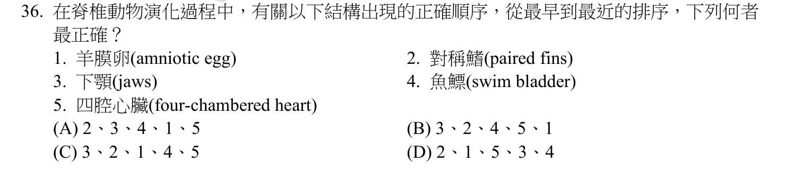
本地原卷PDF7 · 同年官方原卷PDF7 · 官方原答案PDF1（生物50題） · 已核對同年生物釋疑PDF6–8（未列本題）
官方採計：A 原答案：A
未列本輪取得的115年度生物釋疑PDF6–8；依同年答案，不宣稱沒有其他未取得公告
主分類：Ch34 The Origin and Evolution of Vertebrates
34.2 / Early Vertebrate Evolution
目錄行2176；條目起始印刷頁724；實際目錄 PDF44
次分類：Ch34 The Origin and Evolution of Vertebrates
34.3 / Derived Characters of Gnathostomes
目錄行2183；條目起始印刷頁725；實際目錄 PDF44
次分類：Ch34 The Origin and Evolution of Vertebrates
34.3 / Ray-Finned Fishes and Lobe-Fins
目錄行2192；條目起始印刷頁728；實際目錄 PDF44
次分類：Ch34 The Origin and Evolution of Vertebrates
34.5 / Derived Characters of Amniotes
目錄行2212；條目起始印刷頁734；實際目錄 PDF44
次分類：Ch34 The Origin and Evolution of Vertebrates
34.5 / Reptiles
目錄行2218；條目起始印刷頁735；實際目錄 PDF44
次分類：Ch34 The Origin and Evolution of Vertebrates
34.6 / Derived Characters of Mammals
目錄行2225；條目起始印刷頁741；實際目錄 PDF44
主分類理由：34.2 / Early Vertebrate Evolution：早期脊椎動物演化段指出部分無顎類已有成對鰭，為排序起點。
次分類理由：34.3 / Derived Characters of Gnathostomes：有顎類衍生特徵定位顎的出現；34.3 / Ray-Finned Fishes and Lobe-Fins：硬骨魚條目定位魚鰾；34.5 / Derived Characters of Amniotes：羊膜動物條目定位羊膜卵；34.5 / Reptiles：爬行類含鳥及鱷類四腔心臟；34.6 / Derived Characters of Mammals：哺乳類四腔心臟作另一後期譜系核對。
科學說明：官方A，2→3→4→1→5。教材725記錄有些無顎類已有成對鰭，728講肺與魚鰾關係，734起羊膜卵，後續鳥與哺乳類有四腔心。這是所列特徵的概括演化排序，不代表現生魚一路變成鳥哺乳類的單線階梯；四腔心在不同譜系的演化亦不應合成唯一祖先事件。
來源涵蓋範圍：以本地Campbell實際目錄及列示正文作分類依據，原題限定與同年釋疑另存；不將正文小標冒充目錄條目。
教材正文：印刷724／PDF773、印刷725／PDF774、印刷726／PDF775、印刷728／PDF777、印刷729／PDF778、印刷734／PDF783、印刷735／PDF784、印刷736／PDF785、印刷737／PDF786、印刷738／PDF787、印刷739／PDF788、印刷741／PDF790
補充來源：本題未另列課本外來源
另行比較：成對鰭與顎的先後、四腔心是否單次演化？
724–725無顎化石已具成對鰭，之後顎、魚鰾、羊膜卵及四腔心的順序支持A。六個實際34章葉條目保留，章級仍只計一；不把多分支收斂寫成線性祖先鏈。
結論：證據確認，分類疑義已解決。完整覆核紀錄
Q37 · 36.3 / Bulk Flow Transport via the Xylem 正式分類
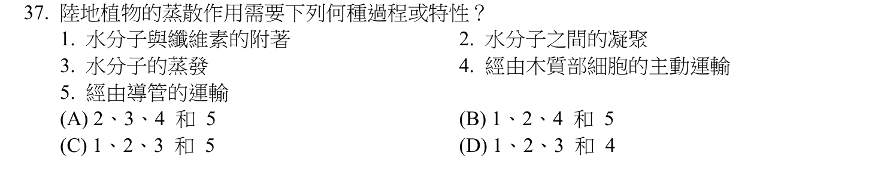
本地原卷PDF8 · 同年官方原卷PDF8 · 官方原答案PDF1（生物50題） · 已核對同年生物釋疑PDF6–8（未列本題）
官方採計：C 原答案：C
未列本輪取得的115年度生物釋疑PDF6–8；依同年答案，不宣稱沒有其他未取得公告
主分類：Ch36 Resource Acquisition and Transport in Vascular Plants
36.3 / Bulk Flow Transport via the Xylem
目錄行2381；條目起始印刷頁792；實際目錄 PDF45
次分類：Ch36 Resource Acquisition and Transport in Vascular Plants
36.3 / Xylem Sap Ascent by Bulk Flow: A Review
目錄行2384；條目起始印刷頁796；實際目錄 PDF45
主分類理由：36.3 / Bulk Flow Transport via the Xylem：蒸散拉力以水凝聚、附著及葉面蒸發驅動木質部運輸。
次分類理由：36.3 / Xylem Sap Ascent by Bulk Flow: A Review：木質部散裝流的被動物理作用排除主動輸水。
科學說明：官方C，1、2、3、5。蒸發降低葉部水勢，凝聚及附著支援連續水柱，導管或管胞作通路；木質部不以活細胞幫浦逐段主動推水。原題泛稱「陸地植物」且列導管，範圍過廣：無維管植物不具木質部，許多維管植物用管胞；按題设典型導管植物模型採C，保留非普遍必需的限制。
來源涵蓋範圍：以本地Campbell實際目錄及列示正文作分類依據，原題限定與同年釋疑另存；不將正文小標冒充目錄條目。
教材正文：印刷792／PDF841、印刷793／PDF842、印刷794／PDF843、印刷795／PDF844、印刷796／PDF845
補充來源：本題未另列課本外來源
另行比較：導管是否所有陸生植物蒸散的必要條件？
題设典型導管植物模型可選C，但管胞植物與無維管植物是原文範圍例外，已明載。主36.3木質部散裝流及同章回顧為次，不能把水上升改成活細胞主動幫浦。
結論：證據確認，分類疑義已解決。完整覆核紀錄
Q38 · 55.4 / Biogeochemical Cycles 正式分類
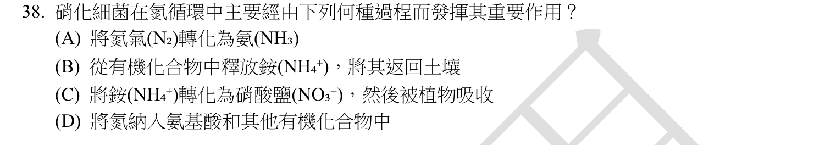
本地原卷PDF8 · 同年官方原卷PDF8 · 官方原答案PDF1（生物50題） · 已核對同年生物釋疑PDF6–8（未列本題）
官方採計：C 原答案：C
未列本輪取得的115年度生物釋疑PDF6–8；依同年答案，不宣稱沒有其他未取得公告
主分類：Ch55 Ecosystems and Restoration Ecology
55.4 / Biogeochemical Cycles
目錄行3712；條目起始印刷頁1249；實際目錄 PDF50
次分類：Ch37 Soil and Plant Nutrition
37.3 / Bacteria and Plant Nutrition
目錄行2463；條目起始印刷頁814；實際目錄 PDF45
主分類理由：55.4 / Biogeochemical Cycles：硝化為生地化學氮循環中的特定無機氮轉換。
次分類理由：37.3 / Bacteria and Plant Nutrition：植物從土壤吸收無機氮將此循環連結到植物營養。
科學說明：官方C。硝化通常由NH4+經NO2−到NO3−，可供植物吸收；A是固氮，B是氨化，D是同化。植物也可吸收NH4+，且硝酸鹽不一定立刻被吸收，原句是可能去向而非唯一去向。
來源涵蓋範圍：以本地Campbell實際目錄及列示正文作分類依據，原題限定與同年釋疑另存；不將正文小標冒充目錄條目。
教材正文：印刷814／PDF863、印刷815／PDF864、印刷816／PDF865、印刷1249／PDF1298、印刷1250／PDF1299、印刷1251／PDF1300、印刷1252／PDF1301
補充來源：本題未另列課本外來源
另行比較：硝化是否等於固氮或氨化？
NH4+→NO2−→NO3−符合C，主55.4循環、次37.3植物細菌營養。反應與植物吸收兩步分清，也不排除植物直接吸銨。
結論：證據確認，分類疑義已解決。完整覆核紀錄
Q39 · 7.4 / How Ion Pumps Maintain Membrane Potential 正式分類
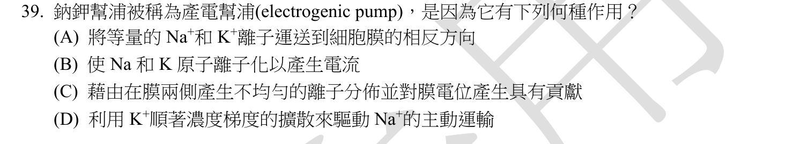
本地原卷PDF8 · 同年官方原卷PDF8 · 官方原答案PDF1（生物50題） · 已核對同年生物釋疑PDF6–8（未列本題）
官方採計：C 原答案：C
未列本輪取得的115年度生物釋疑PDF6–8；依同年答案，不宣稱沒有其他未取得公告
主分類：Ch07 Membrane Structure and Function
7.4 / How Ion Pumps Maintain Membrane Potential
目錄行453；條目起始印刷頁137；實際目錄 PDF36
主分類理由：7.4 / How Ion Pumps Maintain Membrane Potential：鈉鉀幫浦每循環造成淨電荷位移，直接屬離子幫浦維持膜電位。
次分類理由：無另列最小次條目；以3Na+外／2K+內重新計淨+1外移，產電核心為淨電荷轉移。7.4離子幫浦維持膜電位最小葉符合；C語句較寬但可補精確機制。
科學說明：官方C。每ATP通常3Na+外送、2K+內送，淨一個正電荷外移，故為產電。不是把原子離子化；也不是只用K+順梯度驅動Na+逆梯度。濃度不均本身不充分，關鍵是跨膜淨電荷轉移，補足選項C較寬鬆的措辭。
來源涵蓋範圍：以本地Campbell實際目錄及列示正文作分類依據，原題限定與同年釋疑另存；不將正文小標冒充目錄條目。
教材正文：印刷136／PDF185、印刷137／PDF186、印刷138／PDF187
補充來源：本題未另列課本外來源
另行比較：只是離子濃度不同是否足以稱產電？
以3Na+外／2K+內重新計淨+1外移，產電核心為淨電荷轉移。7.4離子幫浦維持膜電位最小葉符合；C語句較寬但可補精確機制。
結論：證據確認，分類疑義已解決。完整覆核紀錄
Q40 · 9.6 / Regulation of Cellular Respiration via Feedback Mechanisms 正式分類
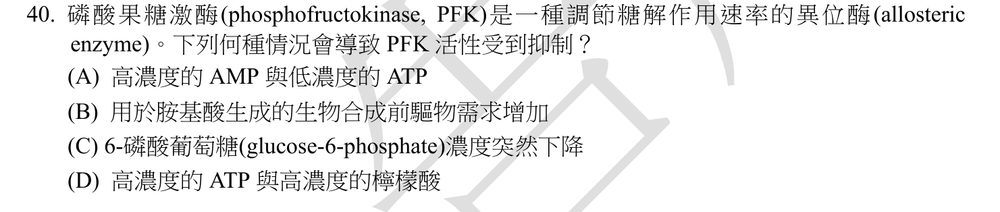
本地原卷PDF8 · 同年官方原卷PDF8 · 官方原答案PDF1（生物50題） · 已核對同年生物釋疑PDF6–8（未列本題）
官方採計：D 原答案：D
未列本輪取得的115年度生物釋疑PDF6–8；依同年答案，不宣稱沒有其他未取得公告
主分類：Ch09 Cellular Respiration and Fermentation
9.6 / Regulation of Cellular Respiration via Feedback Mechanisms
目錄行614；條目起始印刷頁183；實際目錄 PDF37
次分類：Ch08 An Introduction to Metabolism
8.5 / Allosteric Regulation of Enzymes
目錄行539；條目起始印刷頁160；實際目錄 PDF37
主分類理由：9.6 / Regulation of Cellular Respiration via Feedback Mechanisms：PFK受ATP、AMP及檸檬酸的回饋調控，是細胞呼吸調控的直接例子。
次分類理由：8.5 / Allosteric Regulation of Enzymes：異位調控概念說明代謝物在調節位點影響酵素活性。
科學說明：官方D。ATP與檸檬酸高時抑制PFK，AMP可解除／對抗抑制；ATP同時是反應底物與高濃度異位抑制訊號，須分清位點。前驅物需求增加不等同能量充足回饋，葡萄糖6磷酸降低也非本題所列直接抑制訊號。
來源涵蓋範圍：以本地Campbell實際目錄及列示正文作分類依據，原題限定與同年釋疑另存；不將正文小標冒充目錄條目。
教材正文：印刷160／PDF209、印刷161／PDF210、印刷183／PDF232、印刷184／PDF233
補充來源：本題未另列課本外來源
另行比較：ATP作底物為何又可抑制PFK？
調節位點與活性位點作用分開，ATP和檸檬酸高代表能量充足，D。主9.6呼吸回饋、次8.5異位調控，保留跨章原理。
結論：證據確認，分類疑義已解決。完整覆核紀錄
Q41 · 10.5 / C4 Plants 正式分類
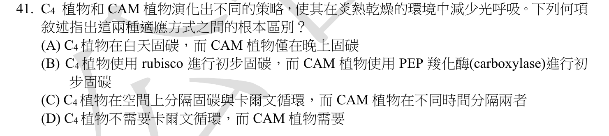
本地原卷PDF8 · 同年官方原卷PDF8 · 官方原答案PDF1（生物50題） · 已核對同年生物釋疑PDF6–8（未列本題）
官方採計：C 原答案：C
未列本輪取得的115年度生物釋疑PDF6–8；依同年答案，不宣稱沒有其他未取得公告
主分類：Ch10 Photosynthesis
10.5 / C4 Plants
目錄行676；條目起始印刷頁203；實際目錄 PDF37
次分類：Ch10 Photosynthesis
10.5 / CAM Plants
目錄行679；條目起始印刷頁205；實際目錄 PDF37
主分類理由：10.5 / C4 Plants：C4的初始固碳與Calvin循環分隔在不同細胞。
次分類理由：10.5 / CAM Plants：CAM以晝夜分隔相同兩階段形成直接比較。
科學說明：官方C。C4為空間分隔、CAM為時間分隔；兩者都使用PEP羧化酶進行初始固定，也都需要Calvin循環。CAM白天仍可用釋出的CO2進行Calvin固碳，因此A「僅晚上固碳」過度絕對。
來源涵蓋範圍：以本地Campbell實際目錄及列示正文作分類依據，原題限定與同年釋疑另存；不將正文小標冒充目錄條目。
教材正文：印刷203／PDF252、印刷204／PDF253、印刷205／PDF254、印刷206／PDF255
補充來源：本題未另列課本外來源
另行比較：CAM僅晚上固碳能否選A？
區分PEP初始固定與白天Calvin固定；CAM並非一切固碳都限晚上。C的空間／時間分隔確定，10.5 C4與CAM兩葉完整保留。
結論：證據確認，分類疑義已解決。完整覆核紀錄
Q42 · 36.4 / Mechanisms of Stomatal Opening and Closing 正式分類
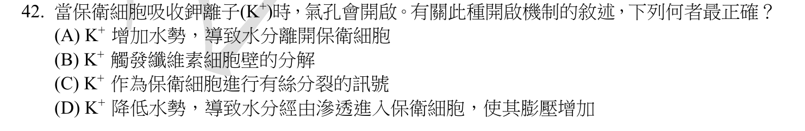
本地原卷PDF8 · 同年官方原卷PDF8 · 官方原答案PDF1（生物50題） · 已核對同年生物釋疑PDF6–8（未列本題）
官方採計：D 原答案：D
未列本輪取得的115年度生物釋疑PDF6–8；依同年答案，不宣稱沒有其他未取得公告
主分類：Ch36 Resource Acquisition and Transport in Vascular Plants
36.4 / Mechanisms of Stomatal Opening and Closing
目錄行2394；條目起始印刷頁797；實際目錄 PDF45
次分類：Ch36 Resource Acquisition and Transport in Vascular Plants
36.2 / Short-Distance Transport of Water Across Plasma Membranes
目錄行2365；條目起始印刷頁788；實際目錄 PDF45
主分類理由：36.4 / Mechanisms of Stomatal Opening and Closing：保衛細胞K+變化控制滲透吸水及氣孔形狀。
次分類理由：36.2 / Short-Distance Transport of Water Across Plasma Membranes：水勢和膨壓說明從溶質增加到吸水的因果。
科學說明：官方D。K+累積先使溶質勢更負，水因水勢差進入，膨壓升高使氣孔開啟；不是K+提高水勢而排水，亦不需分解纖維素或進行細胞分裂。吸水後正壓勢會上升，故不能說平衡後總水勢永遠維持原先較低值。
來源涵蓋範圍：以本地Campbell實際目錄及列示正文作分類依據，原題限定與同年釋疑另存；不將正文小標冒充目錄條目。
教材正文：印刷788／PDF837、印刷789／PDF838、印刷797／PDF846、印刷798／PDF847
補充來源：本題未另列課本外來源
另行比較：吸K後水勢和膨壓是否都必須一直下降？
先ψs更負吸水，後ψp增大；D描述因果的初始與後續階段。主36.4氣孔機制、次36.2水勢，不寫成平衡時總水勢仍必低於外液。
結論：證據確認，分類疑義已解決。完整覆核紀錄
Q43 · 53.3 / The Logistic Growth Model 正式分類
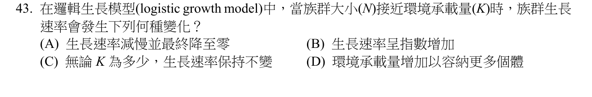
本地原卷PDF8 · 同年官方原卷PDF8 · 官方原答案PDF1（生物50題） · 已核對同年生物釋疑PDF6–8（未列本題）
官方採計：A 原答案：A
未列本輪取得的115年度生物釋疑PDF6–8；依同年答案，不宣稱沒有其他未取得公告
主分類：Ch53 Population Ecology
53.3 / The Logistic Growth Model
目錄行3551；條目起始印刷頁1198；實際目錄 PDF49
主分類理由：53.3 / The Logistic Growth Model：邏輯式dN/dt＝rN(1−N/K)直接給出接近承載量的生長速率。
次分類理由：無另列最小次條目；公式重算dN/dt在K/2最大，而題目限定接近K時降向0；A正確。主53.3真正最小Logistic Growth Model，不用整章代替。
科學說明：官方A。在固定K與r的連續模型、N由下方接近K時，總生長速率降向零。不是K自動增加容納個體；也不把「接近K減慢」擴張成從極小N起全程單調減慢，總速率在N＝K/2最大。
來源涵蓋範圍：以本地Campbell實際目錄及列示正文作分類依據，原題限定與同年釋疑另存；不將正文小標冒充目錄條目。
教材正文：印刷1197／PDF1246、印刷1198／PDF1247、印刷1199／PDF1248
補充來源：本題未另列課本外來源
另行比較：logistic總生長率是從小N起一路遞減？
公式重算dN/dt在K/2最大，而題目限定接近K時降向0；A正確。主53.3真正最小Logistic Growth Model，不用整章代替。
結論：證據確認，分類疑義已解決。完整覆核紀錄
Q44 · 53.1 / Density and Dispersion 正式分類
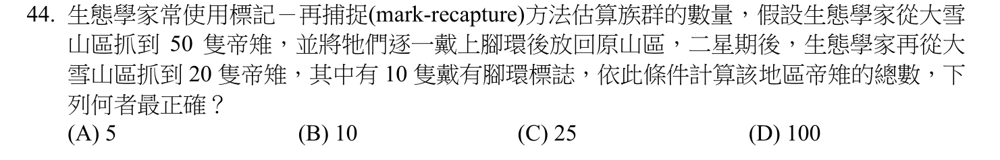
本地原卷PDF9 · 同年官方原卷PDF9 · 官方原答案PDF1（生物50題） · 已核對同年生物釋疑PDF6–8（未列本題）
官方採計：D 原答案：D
未列本輪取得的115年度生物釋疑PDF6–8；依同年答案，不宣稱沒有其他未取得公告
主分類：Ch53 Population Ecology
53.1 / Density and Dispersion
目錄行3531；條目起始印刷頁1191；實際目錄 PDF49
主分類理由：53.1 / Density and Dispersion：標記再捕捉是估算族群密度與數量的方法。
次分類理由：無另列最小次條目；標記比例方程10/20＝50/N，N＝100，對應D；53.1 Density and Dispersion是目錄最小葉。假設及估計性已保留，不把樣本數當真實普查。
科學說明：官方D。按標記比例10/20＝50/N，重算N＝50×20/10＝100隻。估計假设兩次間族群近封閉、標記不脫落、不影響被捕機會且充分混合；未提供資料不進一步編造信賴區間或當作逐隻普查的精確值。
來源涵蓋範圍：以本地Campbell實際目錄及列示正文作分類依據，原題限定與同年釋疑另存；不將正文小標冒充目錄條目。
教材正文：印刷1191／PDF1240、印刷1192／PDF1241、印刷1193／PDF1242
補充來源：本題未另列課本外來源
另行比較：是否該用20−10或直接相加估算？
標記比例方程10/20＝50/N，N＝100，對應D；53.1 Density and Dispersion是目錄最小葉。假設及估計性已保留，不把樣本數當真實普查。
結論：證據確認，分類疑義已解決。完整覆核紀錄
Q45 · 30.3 / Angiosperm Diversity 正式分類
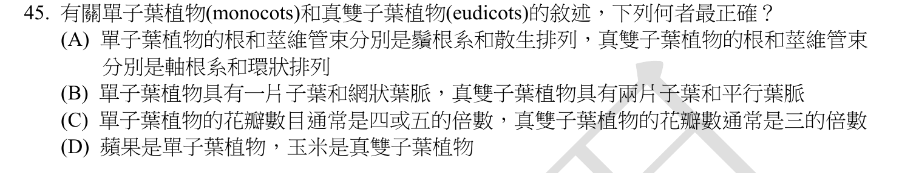
本地原卷PDF9 · 同年官方原卷PDF9 · 官方原答案PDF1（生物50題） · 已核對同年生物釋疑PDF6–8（未列本題）
官方採計：A 原答案：A
未列本輪取得的115年度生物釋疑PDF6–8；依同年答案，不宣稱沒有其他未取得公告
主分類：Ch30 Plant Diversity II: The Evolution of Seed Plants
30.3 / Angiosperm Diversity
目錄行1945；條目起始印刷頁649；實際目錄 PDF43
主分類理由：30.3 / Angiosperm Diversity：Table30.1比較單子葉與真雙子葉的典型形態，主列被子植物多樣性。
次分類理由：無另列最小次條目；按Table30.1與原圖，A為根系／莖排列的兩個欄位比較，文字省略造成混淆已註明。30.3 Angiosperm Diversity比新增根解剖主章精確；典型差異不等於無例外。
科學說明：官方A。通常單子葉鬚根、莖維管束散生，真雙子葉軸根、莖維管束環列；B葉脈及C花瓣倍數對調，D蘋果與玉米歸類對調。A文字「根和莖維管束分別」易混，根系類型與莖維管束排列必須分開，不是根部維管束叫鬚根；亦保留典型特徵而非無例外法則。
來源涵蓋範圍：以本地Campbell實際目錄及列示正文作分類依據，原題限定與同年釋疑另存；不將正文小標冒充目錄條目。
教材正文：印刷649／PDF698、印刷650／PDF699、印刷651／PDF700
補充來源：本題未另列課本外來源
另行比較：A是否錯把根的維管束當成根系類型？
按Table30.1與原圖，A為根系／莖排列的兩個欄位比較，文字省略造成混淆已註明。30.3 Angiosperm Diversity比新增根解剖主章精確；典型差異不等於無例外。
結論：證據確認，分類疑義已解決。完整覆核紀錄
Q46 · 53.4 / “Trade-offs” and Life Histories 正式分類
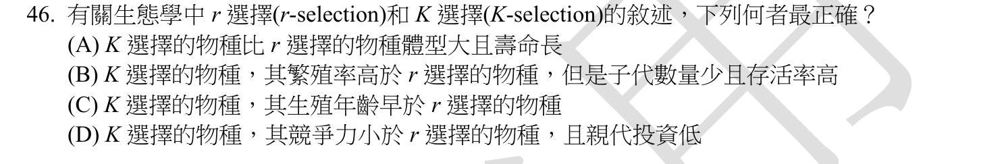
本地原卷PDF9 · 同年官方原卷PDF9 · 官方原答案PDF1（生物50題） · 已核對同年生物釋疑PDF6–8（未列本題）
官方採計：A 原答案：A
未列本輪取得的115年度生物釋疑PDF6–8；依同年答案，不宣稱沒有其他未取得公告
主分類：Ch53 Population Ecology
53.4 / “Trade-offs” and Life Histories
目錄行3564；條目起始印刷頁1201；實際目錄 PDF49
主分類理由：53.4 / “Trade-offs” and Life Histories：r/K選擇比較屬生活史的生存繁殖投資折衷，實際正文在1202延續此條目。
次分類理由：無另列最小次條目；教材1202在生活史Trade-offs下討論此連續框架，A符合傳統傾向而非所有物種必然定律。主53.4真实葉條目確定，保留框架限制，不將原題改寫後才回答。
科學說明：官方A。傳統模型中K端常較大、長壽、成熟較晚、子代少而投資多；B繁殖率高、C更早成熟及D低競爭低投資不合此模型。r/K是簡化連續尺度，不把體型和壽命當成每個物種皆必須符合的二分定律；教材亦提示其解釋限制。
來源涵蓋範圍：以本地Campbell實際目錄及列示正文作分類依據，原題限定與同年釋疑另存；不將正文小標冒充目錄條目。
教材正文：印刷1200／PDF1249、印刷1201／PDF1250、印刷1202／PDF1251
補充來源：本題未另列課本外來源
另行比較：r/K已是簡化框架，是否仍可正式分類？
教材1202在生活史Trade-offs下討論此連續框架，A符合傳統傾向而非所有物種必然定律。主53.4真实葉條目確定，保留框架限制，不將原題改寫後才回答。
結論：證據確認，分類疑義已解決。完整覆核紀錄
Q47 · 38.1 / The Angiosperm Life Cycle: An Overview 正式分類
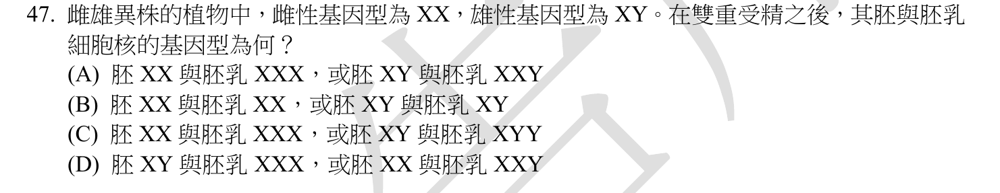
本地原卷PDF9 · 同年官方原卷PDF9 · 官方原答案PDF1（生物50題） · 已核對同年生物釋疑PDF6–8（未列本題）
官方採計：A 原答案：A
未列本輪取得的115年度生物釋疑PDF6–8；依同年答案，不宣稱沒有其他未取得公告
主分類：Ch38 Angiosperm Reproduction and Biotechnology
38.1 / The Angiosperm Life Cycle: An Overview
目錄行2486；條目起始印刷頁826；實際目錄 PDF45
次分類：Ch38 Angiosperm Reproduction and Biotechnology
38.1 / Development of Male Gametophytes in Pollen Grains
目錄行2492；條目起始印刷頁826；實際目錄 PDF45
次分類：Ch15 The Chromosomal Basis of Inheritance
15.2 / The Chromosomal Basis of Sex
目錄行942；條目起始印刷頁298；實際目錄 PDF39
主分類理由：38.1 / The Angiosperm Life Cycle: An Overview：被子植物生活史總覽包含雙重受精產生2n胚及3n胚乳的圖示。
次分類理由：38.1 / Development of Male Gametophytes in Pollen Grains：同一花粉內兩精子由有絲分裂形成，性染色體相同；15.2 / The Chromosomal Basis of Sex：XX/XY系統給出雌X及雄X或Y配子的可能性。
科學說明：官方A。按典型單孢胚囊模型，卵X、兩極核X＋X；同一花粉產生兩個同型精子X/X或Y/Y，所以胚XX配胚乳XXX，或胚XY配胚乳XXY。不能把兩精子獨立隨機配成X與Y，亦不能把胚乳當2n。題幹「基因型」此處只追蹤性染色體，不代表完整基因組。
來源涵蓋範圍：以本地Campbell實際目錄及列示正文作分類依據，原題限定與同年釋疑另存；不將正文小標冒充目錄條目。
教材正文：印刷298／PDF347、印刷299／PDF348、印刷826／PDF875、印刷827／PDF876、印刷828／PDF877
補充來源：本題未另列課本外來源
另行比較：兩精子可以一X一Y、胚乳可為XYY嗎？
實看Figure38.6及男性配子體段，兩精子由同一單倍體有絲分裂，故同型；重算XX/XXX或XY/XXY，A。38.1兩葉與15.2性染色體次目齊存，胚乳3n與胚2n分開。
結論：證據確認，分類疑義已解決。完整覆核紀錄
Q48 · 24.1 / The Biological Species Concept 正式分類
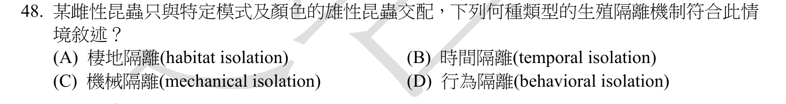
本地原卷PDF9 · 同年官方原卷PDF9 · 官方原答案PDF1（生物50題） · 已核對同年生物釋疑PDF6–8（未列本題）
官方採計：D 原答案：D
未列本輪取得的115年度生物釋疑PDF6–8；依同年答案，不宣稱沒有其他未取得公告
主分類：Ch24 The Origin of Species
24.1 / The Biological Species Concept
目錄行1488；條目起始印刷頁507；實際目錄 PDF41
主分類理由：24.1 / The Biological Species Concept：求偶訊號偏好阻止交配，落在合子前生殖隔離中的行為機制。
次分類理由：無另列最小次條目；訊號辨識和求偶行為偏好符合D，24.1生物物種概念包含合子前屏障图。描述不足證明完整物種隔離的限制保存，不以此把答案改成其他屏障。
科學說明：官方D。特定顏色與求偶模式屬訊號辨認，不是棲地不同、繁殖時間不同或生殖器構造不合。單一雌性偏好描述本身不證明已形成完全物種屏障，但本題要求辨別的隔離機制是行為隔離。
來源涵蓋範圍：以本地Campbell實際目錄及列示正文作分類依據，原題限定與同年釋疑另存；不將正文小標冒充目錄條目。
教材正文：印刷507／PDF556、印刷508／PDF557、印刷509／PDF558、印刷510／PDF559
補充來源：本題未另列課本外來源
另行比較：顏色和模式造成的是機械隔離嗎？
訊號辨識和求偶行為偏好符合D，24.1生物物種概念包含合子前屏障图。描述不足證明完整物種隔離的限制保存，不以此把答案改成其他屏障。
結論：證據確認，分類疑義已解決。完整覆核紀錄
Q49 · 28.4 / Green Algae 正式分類
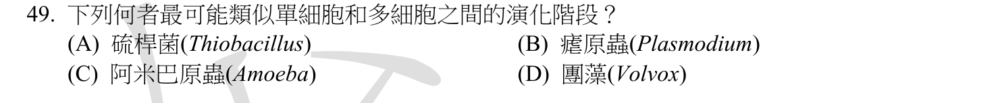
本地原卷PDF9 · 同年官方原卷PDF9 · 官方原答案PDF1（生物50題） · 已核對同年生物釋疑PDF6–8（未列本題）
官方採計：D 原答案：D
未列本輪取得的115年度生物釋疑PDF6–8；依同年答案，不宣稱沒有其他未取得公告
主分類：Ch28 Protists
28.4 / Green Algae
目錄行1830；條目起始印刷頁610；實際目錄 PDF42
主分類理由：28.4 / Green Algae：綠藻條目直接並列單細胞與Volvox多細胞分工，可支援題目的演化比較。
次分類理由：無另列最小次條目；教材610清楚寫true multicellular bodies並提分工，D只是最佳比較模型；主28.4 Green Algae直接指到物種，不用空泛生命史章替代。題目「類似階段」不解讀成直接祖先。
科學說明：官方D。Volvox具有細胞協作及生殖／體細胞分工，適合比較單細胞到多細胞的組織複雜度。教材610明稱true multicellular bodies；不能因中文「團藻」或群體外形就斷言它仍只是無分工細胞團，也不把現生Volvox說成所有多細胞生物的直接祖先。
來源涵蓋範圍：以本地Campbell實際目錄及列示正文作分類依據，原題限定與同年釋疑另存；不將正文小標冒充目錄條目。
教材正文：印刷610／PDF659、印刷611／PDF660
補充來源：本題未另列課本外來源
另行比較：Volvox是無分工群落或所有多細胞生物祖先？
教材610清楚寫true multicellular bodies並提分工，D只是最佳比較模型；主28.4 Green Algae直接指到物種，不用空泛生命史章替代。題目「類似階段」不解讀成直接祖先。
結論：證據確認，分類疑義已解決。完整覆核紀錄
Q50 · 10.2 / The Two Stages of Photosynthesis: A Preview 正式分類
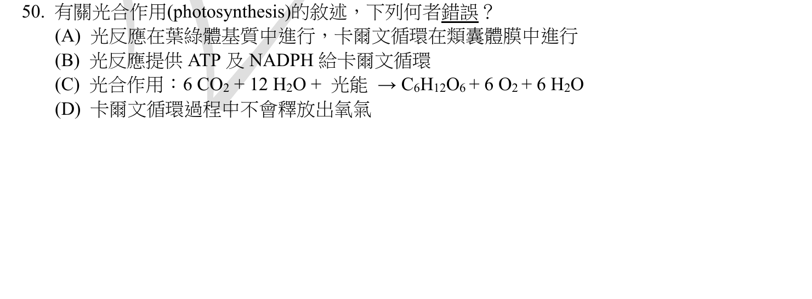
本地原卷PDF9 · 同年官方原卷PDF9 · 官方原答案PDF1（生物50題） · 已核對同年生物釋疑PDF6–8（未列本題）
官方採計：A 原答案：A
未列本輪取得的115年度生物釋疑PDF6–8；依同年答案，不宣稱沒有其他未取得公告
主分類：Ch10 Photosynthesis
10.2 / The Two Stages of Photosynthesis: A Preview
目錄行637；條目起始印刷頁191；實際目錄 PDF37
次分類：Ch10 Photosynthesis
10.2 / Chloroplasts: The Sites of Photosynthesis in Plants
目錄行631；條目起始印刷頁189；實際目錄 PDF37
次分類：Ch10 Photosynthesis
10.2 / Tracking Atoms Through Photosynthesis
目錄行634；條目起始印刷頁189；實際目錄 PDF37
主分類理由：10.2 / The Two Stages of Photosynthesis: A Preview：兩階段總覽直接界定光反應在類囊體膜、Calvin循環在基質。
次分類理由：10.2 / Chloroplasts: The Sites of Photosynthesis in Plants：葉綠體的類囊體膜與基質構造定位兩階段場所；10.2 / Tracking Atoms Through Photosynthesis：追蹤原子及水分解核對化學計量與O2來源。
科學說明：官方A。A把場所對調；光反應供應ATP與NADPH給基質中的Calvin循環。C的6CO2＋12H2O→C6H12O6＋6O2＋6H2O元素平衡，可約去水得到淨式；O2由水分解產生，Calvin循環本身不釋O2。
來源涵蓋範圍：以本地Campbell實際目錄及列示正文作分類依據，原題限定與同年釋疑另存；不將正文小標冒充目錄條目。
教材正文：印刷189／PDF238、印刷190／PDF239、印刷191／PDF240、印刷192／PDF241
補充來源：本題未另列課本外來源
另行比較：是否氧來自CO2、方程兩邊有水即錯？
場所與原子收支分別重查，A顛倒類囊體膜／基質。C兩邊有水仍平衡，水是O2來源；主10.2兩階段總覽、次葉綠體場所與原子追蹤，三葉同章只計一次。
結論：證據確認，分類疑義已解決。完整覆核紀錄
目前篩選沒有符合的題目；本年度總數仍為50題。
補充來源
查證日期：2026-09-10。使用原始研究摘要、官方資料與作者教材，不宣稱所有出版商全文已取得。詳細界線見來源紀錄。
- S01 FDA AGGRENOX 2019處方標籤，12.1藥理機制
不可逆抑制血小板COX，降低血栓素A2及血小板聚集，補充Q1的血栓相關機制。
實讀範圍：下載19頁原PDF；實讀12.1 Aspirin段，不宣稱全份標籤實讀或現行治療指引。
原始來源1 - S14 CDC Diabetic Ketoacidosis（2024-05-15）
胰島素不足時肝臟代謝脂肪產生酮體，過量快速累積造成DKA；支持Q14的因果限定，不把一般ketosis等同酮酸中毒。
實讀範圍：直接下載403；web工具實讀Overview與Causes及呼吸症狀。保存工具回應與作者摘要，兩者雜湊不是遠端HTML原檔雜湊。
原始來源1 - S23 Moeller等，Structure and dynamics of SARS-CoV-2 proofreading exoribonuclease ExoN，PNAS；CDC流感基因組說明
nsp14–nsp10 ExoN移除錯配／異常核苷酸，結構與生化試驗支持冠狀病毒具有校對；限制Q23對所有RNA病毒的概括。另保留Campbell410把流感寫nine segments與CDC eight的差異，不以此旁例推算答案。
實讀範圍：下載10頁作者研究PDF；實讀PDF1摘要及導論相關段，未宣稱逐頁全文審閱；另讀CDC索引返回的A/B型8段RNA說明。
原始來源1 · 原始來源2 - S24 Eisner與Aneshansley，Spray aiming in the bombardier beetle: Photographic evidence，PNAS
儲存腔含hydroquinones和H2O2，反應腔含catalases／peroxidases；接觸後放熱、放出氣體並噴出醌類。此段未提供pH實測。
實讀範圍：PMC全文開啟遇驗證頁，Argonne下載403；實讀web索引回傳原研究導論儲存腔與反應腔段，不宣稱已取得全文。本地保存工具回應。
原始來源1 - S34 Bonfante與Genre，Mechanisms underlying beneficial plant–fungus interactions in mycorrhizal symbiosis，Nature Communications 2010
外生菌根菌鞘包根，Hartig net的菌絲位於表皮及外皮層細胞之間；與胞內叢枝構造區分，補足教材沒有直接命名Hartig的細節。
實讀範圍：取得含文章的HTML，實讀EM正文與Figure1/2圖說；此來源是機制綜述，非本輪新做原始實驗或全篇審查。
原始來源1